SPeditor
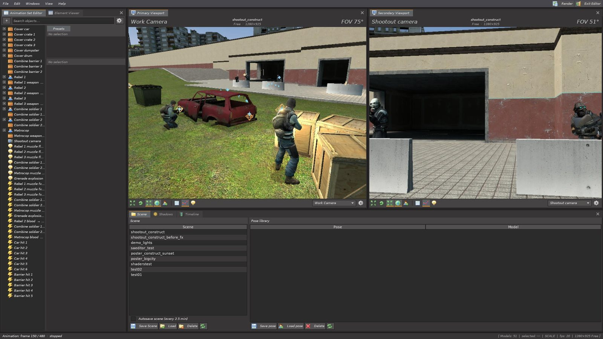
ContentsСодержание
SPeditor Wiki
SPeditor turns Garry's Mod into a small film studio: posters, still scenes and short animations, built on any map with the working habits of Source Filmmaker. This wiki explains every window, button and hotkey.
SPeditor превращает Garry's Mod в маленькую киностудию: постеры, статичные сцены и короткие анимации прямо на любой карте, с приёмами работы из Source Filmmaker. Здесь описано каждое окно, кнопка и сочетание клавиш.
shootout_construct.shootout_construct.DownloadСкачать
Where to startС чего начать
What SPeditor can doЧто умеет SPeditor
- An SFM-like workspace: dockable windows, tabs you can drag out, saved layouts, ten interface themes, your own accent colour and font.
- Two viewports with a frame gate, composition guides and fixed exposure; a free work camera and scene cameras you can look through.
- Posing: a gizmo for objects and for every single bone (fingers too), inverse kinematics that keeps the feet planted, bones locked to other bones, face flexes, eye target, skins and bodygroups, a pose library.
- Objects: colour and opacity, texture replacement, stretching, attaching a weapon to a hand, wearing clothing that bends with the body.
- Lights: point and spot lights, soft edges and penumbra, glow and a visible beam, light masks, 19 ready-made kinds, a three-point rig.
- Effects: explosions, fire, smoke, blood and sparks from the game and from Workshop addons, frozen at any moment.
- Render to PNG or JPEG up to 3840 px with smoothing, depth of field, soft shadows, camera effects and Workshop shaders.
- SAeditor: keyframe animation of everything in the scene (up to an hour long), a curve editor, procedural breathing and blinking, bone keys with ghosts, camera cuts and an in-game player, recorded gameplay (machinima), lip sync, imported model animations and Stop Motion Helper saves, sounds and voices, video export at any frame rate up to 120 fps.
- Objects made with other tools — Ragdoll Mover poses, bonemerged models, lamps of other addons — can be taken into the scene.
- Scenes, poses and layouts are saved; undo and redo for every edit; English and Russian interface; a mod system for authors.
- Рабочее место как в SFM: стыкуемые окна, вкладки, которые можно вытащить, сохранённые раскладки, десять тем интерфейса, свой цвет акцента и шрифт.
- Два вьюпорта с рамкой кадра, сетками композиции и фиксированной экспозицией; свободная рабочая камера и камеры сцены, через которые можно смотреть.
- Позирование: гизмо для объектов и для каждой кости (включая пальцы), инверсная кинематика с неподвижными стопами, кости, прикреплённые к другим костям, мимика, направление взгляда, скины и бодигруппы, библиотека поз.
- Объекты: цвет и прозрачность, замена текстур, растяжение, оружие в руке, одежда, которая гнётся вместе с телом.
- Свет: точечный свет и прожекторы, мягкий край и полутень, свечение и видимый луч, маски света, 19 готовых видов, трёхточечная схема.
- Эффекты: взрывы, огонь, дым, кровь и искры из игры и аддонов Workshop, остановленные в любой момент.
- Рендер в PNG или JPEG до 3840 px со сглаживанием, глубиной резкости, мягкими тенями, эффектами камеры и шейдерами Workshop.
- SAeditor: анимация ключевыми кадрами всего, что есть в сцене (длиной до часа), редактор кривых, процедурное дыхание и моргание, ключи костей с призраками, смены камер и плеер в игре, запись игры (машинима), липсинк, импорт анимаций моделей и сохранений Stop Motion Helper, звуки и голоса, экспорт видео с любой частотой кадров до 120 к/с.
- Объекты, сделанные другими инструментами — позы Ragdoll Mover, модели на бонмёрдже, лампы других аддонов, — можно забрать в сцену.
- Сцены, позы и раскладки сохраняются; отмена и повтор любого действия; английский и русский интерфейс; система модов для авторов.
Made with SPeditorСделано в SPeditor
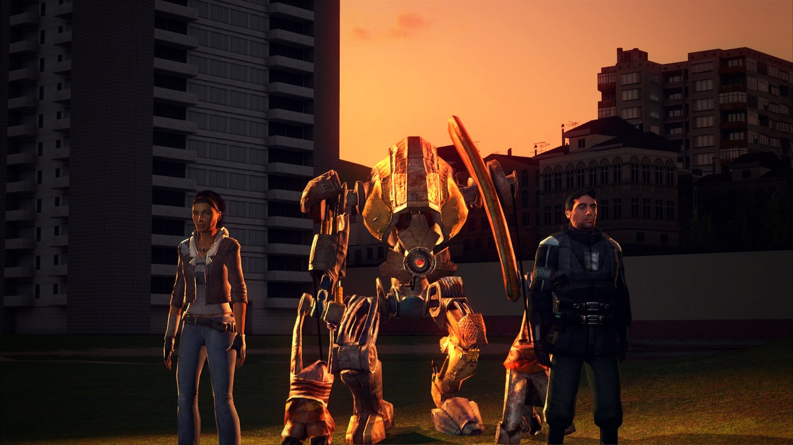
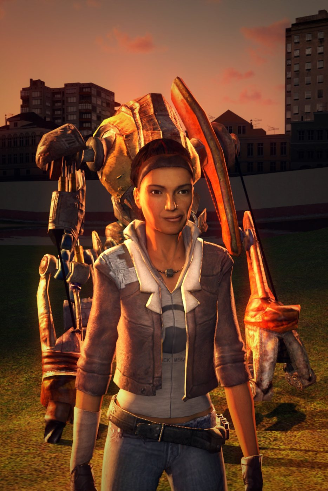
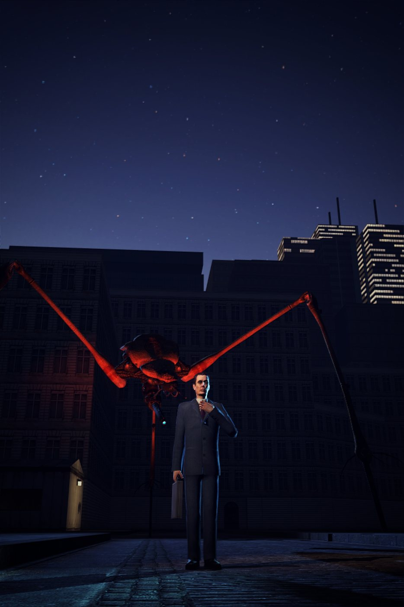
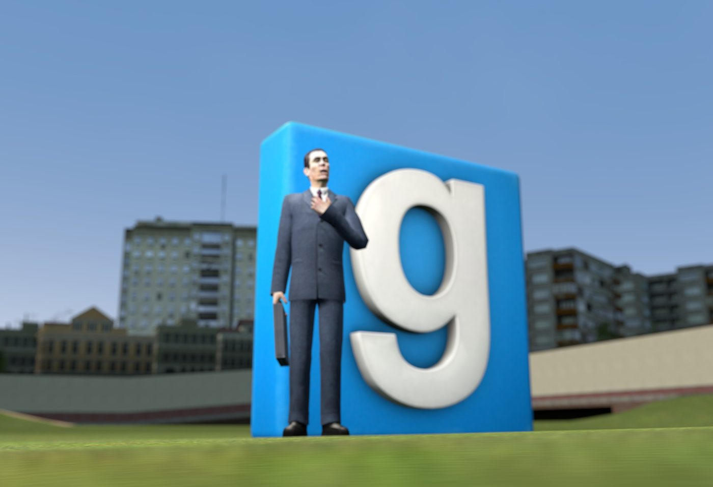
This wiki describes SPeditor a0.6 (alpha); the changes of this version are marked new. The screenshots show the English interface; switch the language in the top right corner of this page.
Описана версия SPeditor a0.6 (альфа); изменения этой версии отмечены знаком new. На скриншотах английский интерфейс; язык этой страницы переключается в правом верхнем углу.
Installing and openingУстановка и запуск
SPeditor is a normal Workshop addon. It works in singleplayer and on servers, on any map.
SPeditor — обычный аддон из Workshop. Работает в одиночной игре и на серверах, на любой карте.
InstallingУстановка
- Open the SPeditor page in the Steam Workshop and press Subscribe.
- Start Garry's Mod (or restart it if it was running) and load any map.
gm_constructandgm_flatgrassare good for a start. - Optional: subscribe to GShader Library if you want Workshop shaders in your renders (see Shaders).
- Откройте страницу SPeditor в Steam Workshop и нажмите Подписаться.
- Запустите Garry's Mod (или перезапустите, если он был открыт) и загрузите любую карту. Для начала хорошо подходят
gm_constructиgm_flatgrass. - По желанию: подпишитесь на GShader Library, если нужны шейдеры из Workshop в рендерах (см. Шейдеры).
Opening the editorКак открыть редактор
There are three ways. All of them toggle: the same action closes the editor again.
Есть три способа. Все работают как переключатель: то же действие снова закрывает редактор.
- C menu
- Hold C and click the SPeditor icon on the desktop of the context menu.
- Q menu
- Hold Q, open the SPeditor tab on the right, the SPeditor item, then Toggle editor.
- Console
- Type
speditor_toggle. Bind it to a key to open the editor in one press:bind f6 speditor_toggle.
- Меню C
- Зажмите C и нажмите значок SPeditor на рабочем столе контекстного меню.
- Меню Q
- Зажмите Q, откройте вкладку SPeditor справа, пункт SPeditor, затем Toggle editor.
- Консоль
- Введите
speditor_toggle. Чтобы открывать редактор одной клавишей, привяжите команду:bind f6 speditor_toggle.
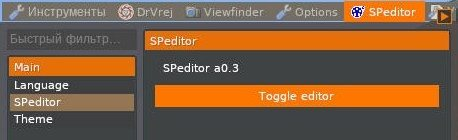
To leave the editor press Exit Editor in the top right corner, use File → Exit Editor, or run speditor_toggle again. Your scene stays on the map.
Чтобы выйти, нажмите Exit Editor в правом верхнем углу, File → Exit Editor или снова выполните speditor_toggle. Сцена остаётся на карте.
Interface languageЯзык интерфейса
Q menu → SPeditor → Language, or the console: speditor_language en / speditor_language ru. The language is applied the next time the editor is opened.
Меню Q → SPeditor → Language или консоль: speditor_language ru / speditor_language en. Язык применяется при следующем открытии редактора.
On a serverНа сервере
By default only admins may use the editor on a server. The server owner changes this with speditor_access:
По умолчанию на сервере редактором пользуются только админы. Владелец сервера меняет это командой speditor_access:
| ValueЗначение | Who may open the editorКто может открыть редактор |
|---|---|
admin | Admins and superadmins (default)Админы и суперадмины (по умолчанию) |
superadmin | Superadmins onlyТолько суперадмины |
all | Every playerВсе игроки |
Each player has a limit of models, lights, cameras and effects. A player without access sees the message “You do not have access to SPeditor on this server”.
У каждого игрока есть лимит моделей, источников света, камер и эффектов. Игрок без доступа видит сообщение «У вас нет доступа к SPeditor на этом сервере».
Where your files areГде лежат ваши файлы
Everything SPeditor saves is in garrysmod/data/speditor/:
Всё, что сохраняет SPeditor, лежит в garrysmod/data/speditor/:
| FolderПапка | ContentsСодержимое |
|---|---|
renders/ | Pictures, frame sequences and videos you renderedСнятые картинки, последовательности кадров и видео |
scenes/<SteamID>/ | Saved scenes and autosaves (on a server they are kept on the server)Сохранённые сцены и автосохранения (на сервере — на стороне сервера) |
poses/ | The pose libraryБиблиотека поз |
layouts/ | Window layouts; _last.json is the layout at the moment you closed the editorРаскладки окон; _last.json — раскладка в момент закрытия редактора |
sounds/ | Your own WAV, MP3 and OGG files for SAeditorВаши файлы WAV, MP3 и OGG для SAeditor |
windows.json | Window properties such as “Always on top”Свойства окон, например «Всегда сверху» |
Garry's Mod lets addons write only a few file types. Videos are therefore saved as name.avi.dat: remove .dat from the name and it is a regular AVI file.
Garry's Mod разрешает аддонам записывать только несколько типов файлов. Поэтому видео сохраняется как имя.avi.dat: уберите из имени .dat, и это обычный AVI.
Your first poster in five stepsПервый постер за пять шагов
A short walk through the whole workflow. Every step links to the page that explains it in detail.
Короткий проход по всему процессу. Каждый шаг ведёт на страницу с подробностями.
- Add a character. Press + at the top of the Animation Set Editor and choose Model…. Find a model in the Model Browser (for example
alyx) and double-click it. It appears in front of the work camera. - Pose it. Click the model in the viewport. Press 1 to move, 2 to rotate. Click a bone marker (a small cube on a joint) to pose a single bone; press I for inverse kinematics and drag a hand. See Posing.
- Light it. + → Soft light → Softbox for the key light, then a Rim light behind the character. Or select the model and use Create 3-point light rig. See Lights.
- Frame it. Fly the work camera to a good view (hold RMB and use WASD), then + → Spawn Camera. The camera is created exactly where you look. Choose a frame aspect such as 2:3 (poster) in the View → Frame aspect menu. See Cameras.
- Render. Press Render in the top right corner, pick your camera, the size (up to 3840 px) and the format, and press Render. The file appears in
garrysmod/data/speditor/renders/. See Rendering.
- Добавьте персонажа. Нажмите + вверху Animation Set Editor и выберите Model…. Найдите модель в браузере моделей (например,
alyx) и дважды щёлкните по ней. Она появится перед рабочей камерой. - Поставьте позу. Щёлкните по модели во вьюпорте. 1 — перемещение, 2 — вращение. Щёлкните по маркеру кости (маленький кубик на суставе), чтобы двигать одну кость; I включает инверсную кинематику — тяните за кисть. См. Позы.
- Поставьте свет. + → Soft light → Softbox для основного света, затем Rim light позади персонажа. Или выделите модель и выберите Create 3-point light rig. См. Свет.
- Выберите кадр. Подлетите рабочей камерой к удачному ракурсу (зажмите ПКМ и используйте WASD), затем + → Spawn Camera: камера создаётся ровно там, куда вы смотрите. Выберите пропорции кадра, например 2:3 (poster), в меню View → Frame aspect. См. Камеры.
- Отрендерите. Нажмите Render в правом верхнем углу, выберите камеру, размер (до 3840 px) и формат и нажмите Render. Файл появится в
garrysmod/data/speditor/renders/. См. Рендер.
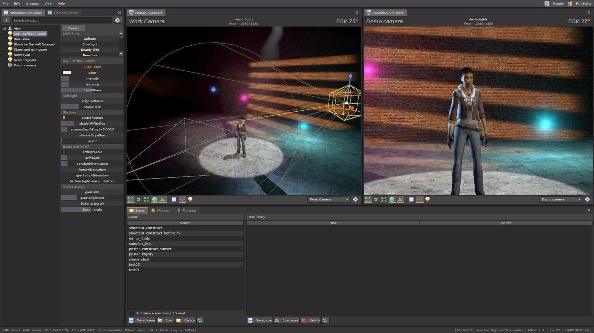
Save often: File → Save Scene…. A scene keeps the objects, the poses, the lights, the camera effects, the frame settings and the animation. Switch on Autosave scene in the same menu for a backup every 2.5 minutes.
Сохраняйтесь чаще: File → Save Scene…. Сцена хранит объекты, позы, свет, эффекты камеры, настройки кадра и анимацию. Включите Autosave scene в том же меню — резервная копия каждые 2,5 минуты.
Want to see a finished scene first? Open the Scene tab at the bottom and load shootout_construct (on the map gm_construct). It is an animated shootout with effects and sounds that comes with the addon.
Хотите сначала посмотреть готовую сцену? Откройте вкладку Scene внизу и загрузите shootout_construct (карта gm_construct). Это анимированная перестрелка с эффектами и звуками, которая идёт вместе с аддоном.
The workspaceРабочее пространство
The editor covers the screen with dockable windows, like Source Filmmaker. Each window holds one or more tabs; tabs can be moved between windows or torn off into a window of their own.
Редактор заполняет экран стыкуемыми окнами, как Source Filmmaker. В каждом окне одна или несколько вкладок; вкладки можно переносить между окнами или вытаскивать в отдельное окно.
Parts of the screenЧасти экрана
| PartЧасть | What it is forДля чего |
|---|---|
| Menu barСтрока меню | File, Edit, Windows, View, Help on the left; Render and Exit Editor on the right.File, Edit, Windows, View, Help слева; Render и Exit Editor справа. |
| Animation Set Editor | The object tree and the controls of the selected object: bones, face, eyes, light and camera settings. See Objects.Дерево объектов и управление выделенным объектом: кости, лицо, глаза, настройки света и камеры. См. Объекты. |
| Element Viewer | Every property of the selected object as a list of numbers you can type in.Все свойства выделенного объекта списком чисел, которые можно вводить вручную. |
| Primary Viewport | The main 3D view where you select and edit. Shows the work camera or a scene camera.Главный 3D-вид, где вы выделяете и редактируете. Показывает рабочую камеру или камеру сцены. |
| Secondary Viewport | A second view, usually through the scene camera, so you see the final frame while you work.Второй вид, обычно через камеру сцены — вы видите итоговый кадр во время работы. |
| Scene · Shadows · Timeline | The bottom window: scene and pose library, shadow settings, and the SAeditor timeline.Нижнее окно: сцены и библиотека поз, настройки теней и таймлайн SAeditor. |
| Status barСтрока состояния | Hints on the left; on the right the number of models, the selection, the tool, FPS and the render size.Слева подсказки; справа число моделей, выделение, инструмент, FPS и размер рендера. |
Windows and tabsОкна и вкладки
- Move a tab: drag it by its tab bar and drop it on the edge of another window (it docks beside it) or on another window's tab bar (it becomes a tab there). Hold Ctrl while dropping to keep it floating.
- Maximize: double-click the tab bar. Double-click again to restore.
- Resize: drag the gap between two docked windows; neighbours follow.
- Window properties: right-click the tab bar → Window properties → Always on top keeps the window above the others (the Model Browser is on top by default).
- Reopen a closed window: the Windows menu lists all of them.
- Перенести вкладку: перетащите её за строку вкладок и отпустите на краю другого окна (встанет рядом) или на строке вкладок другого окна (станет его вкладкой). Удерживайте Ctrl при отпускании, чтобы окно осталось плавающим.
- Развернуть: двойной щелчок по строке вкладок. Повторный — вернуть.
- Изменить размер: тяните промежуток между двумя состыкованными окнами; соседи подстраиваются.
- Свойства окна: правый щелчок по строке вкладок → Window properties → Always on top держит окно поверх остальных (браузер моделей поверх по умолчанию).
- Вернуть закрытое окно: все окна перечислены в меню Windows.
LayoutsРаскладки
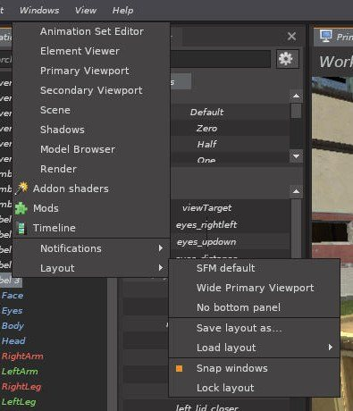
Windows → Layout has three presets: SFM default, Wide Primary Viewport (one large viewport) and No bottom panel. Save layout as… keeps your own arrangement under a name; Load layout brings it back.
Windows → Layout содержит три пресета: SFM default, Wide Primary Viewport (один большой вьюпорт) и No bottom panel. Save layout as… сохраняет вашу раскладку под именем, Load layout возвращает её.
Snap windows makes floating windows stick to edges. Lock layout stops windows from being moved by accident.
Snap windows притягивает плавающие окна к краям. Lock layout защищает окна от случайного перемещения.
The editor remembers the layout you had when you closed it and restores it next time.
Редактор запоминает раскладку в момент закрытия и восстанавливает её при следующем открытии.
On screens narrower than about 1430 px (1366×768, 1280×720, 1024×768) the default layout used to break: the left panel covered the viewport and windows became floating. Since a0.4 the layout fits to any screen, and a saved layout that does not fit the current screen is replaced by the default one.
На экранах уже примерно 1430 px (1366×768, 1280×720, 1024×768) стандартная раскладка раньше ломалась: левая панель закрывала вьюпорт, окна становились плавающими. С a0.4 раскладка подстраивается под любой экран, а сохранённая раскладка, которая не помещается на текущий экран, заменяется стандартной.
Interface settingsНастройки интерфейса
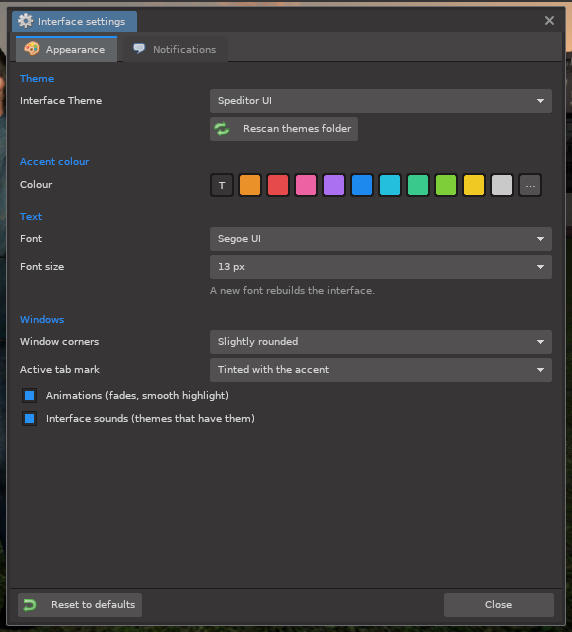
View → Interface settings… gathers everything about the look of the editor. The Appearance tab:
View → Interface settings… собирает всё, что касается вида редактора. Вкладка Appearance:
- Theme
- The same list as View → Interface Theme (Themes).
- Interface scale new
- From 50 % (more room for the viewports) to 200 % (2K / 4K screens); by default it follows the screen (1440 lines — 125 %, 2160 — 200 %). The windows keep their places when it changes.
- Accent colour
- The colour of selections, active tabs and highlights. T takes the theme's own colour, … picks any colour.
- Font · Font size
- Any font installed on your computer; a new font rebuilds the interface at once.
- Window corners · Active tab mark
- Square or rounded windows; how the tab you are on is marked.
- Animations · Interface sounds
- Windows and menus fade in and highlights glide; sounds play in themes that have them.
- Theme
- Тот же список, что в View → Interface Theme (Темы).
- Interface scale new
- От 50 % (больше места вьюпортам) до 200 % (экраны 2K / 4K); по умолчанию — по экрану (1440 строк — 125 %, 2160 — 200 %). При смене масштаба окна остаются на своих местах.
- Accent colour
- Цвет выделения, активных вкладок и подсветки. T — собственный цвет темы, … — любой цвет.
- Font · Font size
- Любой шрифт, установленный на компьютере; новый шрифт сразу перестраивает интерфейс.
- Window corners · Active tab mark
- Прямые или скруглённые углы окон; как отмечается текущая вкладка.
- Animations · Interface sounds
- Окна и меню плавно появляются, подсветка скользит; звуки играют в темах, где они есть.
The Notifications tab is described on the Themes and notifications page. Reset to defaults brings back the stock look.
Вкладка Notifications описана на странице Темы и уведомления. Reset to defaults возвращает стандартный вид.
Your own keysСвои клавиши new
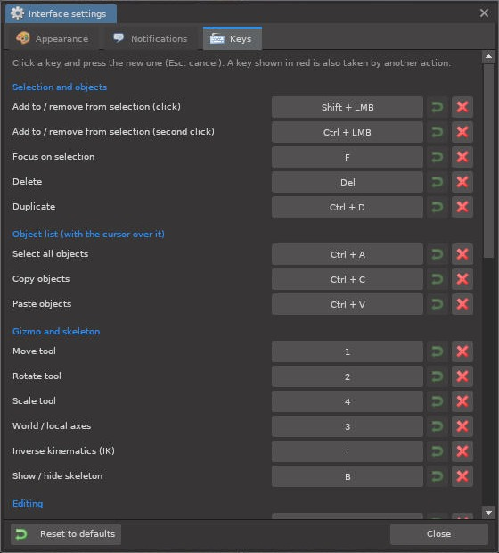
The Keys tab lists every hotkey of the editor and of the mods (SAeditor too). Click the key of an action and press the new one, with Ctrl / Shift / Alt if you like; Esc cancels. For a click (adding to the selection) hold Shift or Ctrl and click.
Вкладка Keys перечисляет все горячие клавиши редактора и модов (и SAeditor). Нажмите на клавишу действия и затем новую, если нужно — с Ctrl / Shift / Alt; Esc — отмена. Для клика (добавить к выделению) зажмите Shift или Ctrl и кликните.
- A key shown in red is also taken by another action — change one of them.
- The arrow button returns the default key, the cross leaves the action without a key; Reset all keys is at the bottom.
- Keys of the Object list group work only with the cursor over the object list, so Ctrl + C copies objects there and a pose in the viewport.
- The keys are kept in
garrysmod/data/speditor/keys.json; Help → Hotkeys always shows the current ones.
- Клавиша, показанная красным, занята ещё каким-то действием — смените одну из них.
- Кнопка со стрелкой возвращает клавишу по умолчанию, крестик оставляет действие без клавиши; внизу — Reset all keys.
- Клавиши группы Object list работают только с курсором над списком объектов, поэтому Ctrl + C там копирует объекты, а во вьюпорте — позу.
- Клавиши хранятся в
garrysmod/data/speditor/keys.json; Help → Hotkeys всегда показывает текущие.
When every window is closedЕсли закрыты все окна
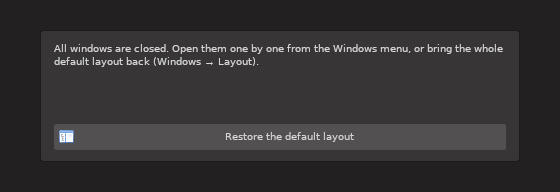
An editor with every window closed no longer looks broken: it shows a card with Restore the default layout.
Редактор, в котором закрыты все окна, больше не выглядит сломанным: он показывает карточку с кнопкой Restore the default layout.
Viewports and the work cameraВьюпорты и рабочая камера
You look at the scene through the work camera — a free camera that is not part of the scene and never appears in renders.
Вы смотрите на сцену через рабочую камеру — свободную камеру, которая не входит в сцену и никогда не попадает в рендер.
Moving aroundПеремещение
| InputВвод | ActionДействие |
|---|---|
| RMB + WASD | Fly. Q / E go down / up, Shift is faster, Ctrl slower. Moving the mouse with the right button held turns the camera.Полёт. Q / E — вниз / вверх, Shift быстрее, Ctrl медленнее. Движение мыши с зажатой правой кнопкой поворачивает камеру. |
| Alt + LMB | Orbit around the selection.Облёт вокруг выделения. |
| WheelКолесо | Move forward / back (dolly).Вперёд / назад (наезд). |
| Alt + Wheelколесо | Change the field of view (zoom lens).Изменить угол обзора (зум-объектив). |
| F | Focus on the selected object or bone.Сфокусироваться на выделенном объекте или кости. |
| V | Look through the selected scene camera; V again goes back.Смотреть через выделенную камеру сцены; повторное V — вернуться. |
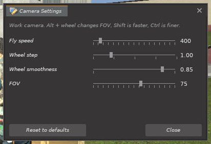
Help → Camera Settings… sets the fly speed, the wheel step and its smoothness, and the FOV of the work camera. Reset to defaults brings back 400 / 1.00 / 0.85 / 75°.
Help → Camera Settings… задаёт скорость полёта, шаг колеса и его плавность, а также FOV рабочей камеры. Reset to defaults возвращает 400 / 1.00 / 0.85 / 75°.
The viewport header and toolbarЗаголовок и панель вьюпорта
The header shows the camera on the left (Work Camera or the scene camera's name), the scene name, the frame aspect and size in the middle, and the field of view on the right. The dark bars around the picture are the frame gate: only what is inside them gets into the render.
В заголовке слева камера (Work Camera или имя камеры сцены), в центре имя сцены, пропорции и размер кадра, справа угол обзора. Тёмные поля вокруг картинки — рамка кадра: в рендер попадает только то, что внутри.
The toolbar under the picture holds the tool buttons (move, rotate, scale, world/local axes, IK), view toggles (frame guides, skeleton, fullbright), the camera list and the gear menu.
Панель под картинкой: кнопки инструментов (перемещение, вращение, масштаб, мировые/локальные оси, IK), переключатели вида (сетки кадра, скелет, fullbright), список камер и меню-шестерёнка.
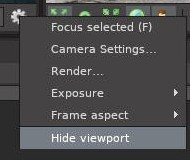
The gear menu of a viewport: Focus selected, Camera Settings, Render, Exposure, Frame aspect, Hide viewport. The camera list chooses what the viewport shows; in the Secondary Viewport Auto shows the selected scene camera, and the work view while you look through a camera in the Primary one.
Меню-шестерёнка вьюпорта: Focus selected, Camera Settings, Render, Exposure, Frame aspect, Hide viewport. Список камер выбирает, что показывает вьюпорт; во втором вьюпорте Auto показывает выделенную камеру сцены, а пока Primary смотрит через камеру — рабочий вид.
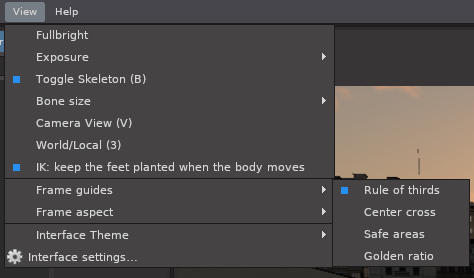
Frame guides help with composition: rule of thirds, a center cross, safe areas and the golden ratio. They are drawn only in the viewport, never in the render.
Сетки кадра помогают с композицией: правило третей, центральный крест, безопасные зоны и золотое сечение. Они рисуются только во вьюпорте, в рендер не попадают.
The Primary and Secondary viewports pause while the Render window is open, to give the preview all the speed. The FPS counter reads about 20 when the game window is not focused — that is the engine saving power, not SPeditor.
Пока открыто окно рендера, оба вьюпорта на паузе, чтобы превью работало быстрее. Когда окно игры не в фокусе, счётчик FPS показывает около 20 — это экономия движка, а не SPeditor.
ObjectsОбъекты
A scene is made of four kinds of objects: models (props and characters), lights, cameras and effects. All of them are listed in the Animation Set Editor.
Сцена состоит из объектов четырёх видов: модели (пропы и персонажи), свет, камеры и эффекты. Все они перечислены в Animation Set Editor.
Adding objects: the + menuДобавление: меню +
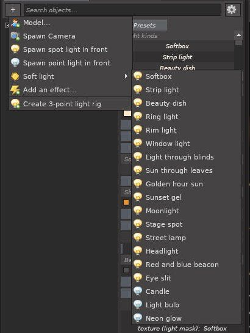
- Model…
- Opens the Model Browser.
- Spawn Camera
- A scene camera exactly where the work camera looks.
- Spawn spot / point light in front
- A plain light in front of the camera.
- Soft light
- One of 19 ready-made light kinds (see Lights).
- Add an effect…
- Opens the Effect Browser (see Effects).
- Create 3-point light rig
- Key, fill and rim lights around the selected model.
- Model…
- Открывает браузер моделей.
- Spawn Camera
- Камера сцены ровно там, куда смотрит рабочая камера.
- Spawn spot / point light in front
- Простой источник света перед камерой.
- Soft light
- Один из 19 готовых видов света (см. Свет).
- Add an effect…
- Открывает браузер эффектов (см. Эффекты).
- Create 3-point light rig
- Основной, заполняющий и контровой свет вокруг выделенной модели.
Several objects at onceНесколько объектов сразу new
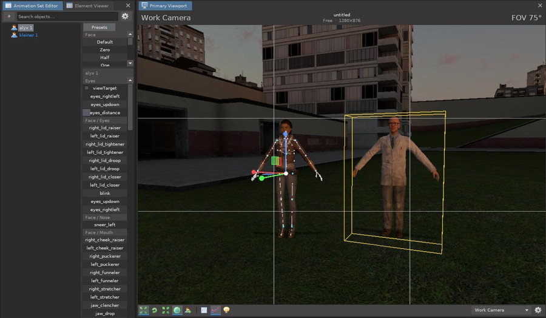
- Shift + click (or Ctrl + click) adds an object to the selection in the viewport or in the object list; the same on a selected one takes it out. The gizmo then moves, turns and scales them together; Del and Ctrl + D work on all of them.
- With the cursor over the object list: Ctrl + A selects everything except locked and hidden objects; Ctrl + C copies the selected objects, Ctrl + V pastes copies a little aside. Paste again and the next copies go one more step further; one Ctrl + Z takes a whole paste back. The same commands are in the Edit menu.
- A duplicate (Ctrl + D) of several objects is one undo step too, and the copies become the new selection.
- Shift + клик (или Ctrl + клик) добавляет объект к выделению во вьюпорте или в списке объектов; то же по выделенному убирает его. Гизмо тогда переносит, поворачивает и масштабирует их вместе; Del и Ctrl + D действуют на все.
- С курсором над списком объектов: Ctrl + A выделяет всё, кроме закреплённых и скрытых объектов; Ctrl + C копирует выделенные объекты, Ctrl + V вставляет копии чуть в стороне. Вставьте ещё раз — следующие копии встанут ещё на шаг дальше; одно Ctrl + Z убирает всю вставку. Те же команды есть в меню Edit.
- Дубликат (Ctrl + D) нескольких объектов — тоже один шаг отмены, и копии становятся новым выделением.
The Model BrowserБраузер моделей
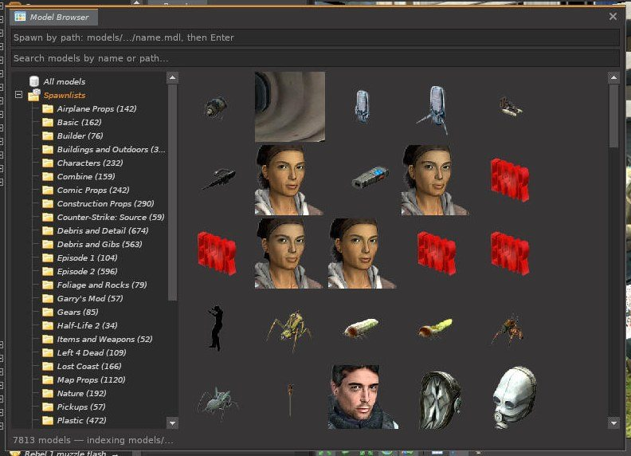
- Search by part of the name or the path, e.g.
alyx,combine,props_c17. - Spawn by path: type a full path such as
models/player/group01/male_07.mdland press Enter — handy for models from addons that are not in any spawnlist. - Any model works: props, ragdolls, player models and NPC models from the game and from the Workshop. Models with a physics skeleton become posable ragdolls; the others are props that can still have bones.
- The status line shows how many models are indexed; the list of All models grows while indexing runs in the background.
- new Legacy addons — folders in
garrysmod/addons, not from the Workshop — are listed with the Workshop ones.
- Поиск по части имени или пути, например
alyx,combine,props_c17. - Создание по пути: введите полный путь, например
models/player/group01/male_07.mdl, и нажмите Enter — удобно для моделей из аддонов, которых нет в списках. - Подходит любая модель: пропы, рэгдоллы, модели игроков и NPC из игры и из Workshop. Модели с физическим скелетом становятся позируемыми рэгдоллами, остальные — пропами, у которых тоже могут быть кости.
- В строке состояния — сколько моделей проиндексировано; список All models растёт, пока индексация идёт в фоне.
- new Legacy-аддоны — папки в
garrysmod/addons, не из Workshop, — показываются вместе с аддонами Workshop.
Addons and GamesАддоны и игры
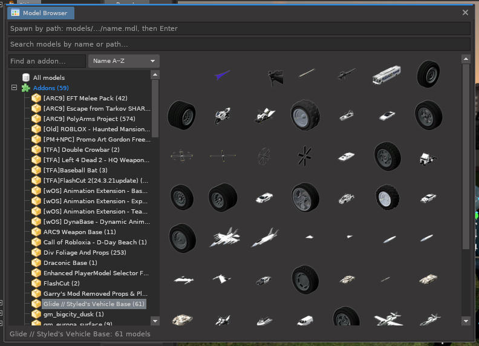
Addons lists every Workshop subscription that has models, with their number. Find an addon… filters by name; the list can be sorted by name (A–Z, Z–A), newest or oldest subscriptions, recently updated, or most models. Games shows the models of mounted games.
Addons — все подписки Workshop, в которых есть модели, с их количеством. Find an addon… фильтрует по имени; порядок — по имени (A–Z, Z–A), новые или старые подписки, недавно обновлённые или больше всего моделей. Games — модели подключённых игр.
The icons are the same as in the spawn menu. If one is broken, right-click it → Render the icon again.
Иконки те же, что в меню спавна. Если иконка битая — правый щелчок → Render the icon again.
Taking objects from the mapОбъекты с карты
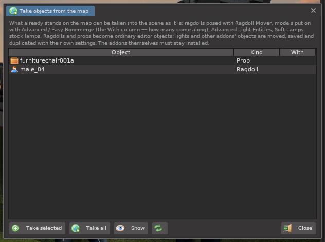
File → Take objects from the map lists what stands on the map but is not in the scene yet:
File → Take objects from the map показывает то, что стоит на карте, но ещё не в сцене:
- ragdolls posed with Ragdoll Mover or the physgun, and props;
- models put on with Advanced Bonemerge or Easy Bonemerge — they come along with their model (the With column counts them);
- lamps of Advanced Light Entities, Soft Lamps and the stock lamp tool.
- рэгдоллы, поставленные Ragdoll Mover или физганом, и пропы;
- модели, надетые через Advanced Bonemerge или Easy Bonemerge, — они переходят вместе со своей моделью (их считает колонка With);
- лампы Advanced Light Entities, Soft Lamps и стандартного инструмента ламп.
Take selected, Take all; Show points the camera at the line. Ragdolls and props become ordinary editor objects. Lights and other addons' objects are moved, saved in the scene and duplicated with their own settings — the addons that made them must stay installed.
Take selected, Take all; Show наводит камеру на строку. Рэгдоллы и пропы становятся обычными объектами редактора. Свет и объекты других аддонов двигаются, сохраняются в сцене и дублируются со своими настройками — аддоны, которые их создали, должны оставаться установленными.
The object treeДерево объектов
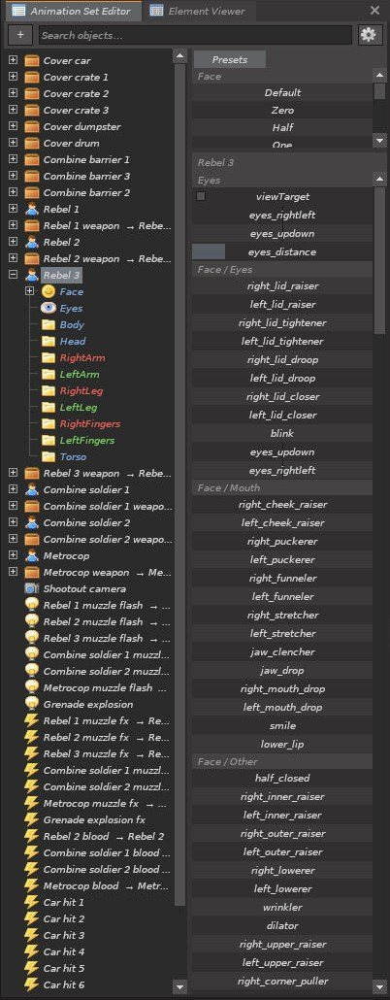
The left column of the Animation Set Editor lists every object of the scene. Icons tell the kind: a person for characters, a box for props, a bulb for lights, a camera, a lightning bolt for effects. An attached object shows its parent after an arrow: Rebel 1 weapon → Rebel 1.
Левая колонка Animation Set Editor перечисляет все объекты сцены. Значок показывает вид: человек — персонаж, ящик — проп, лампочка — свет, камера, молния — эффект. У привязанного объекта после стрелки указан родитель: Rebel 1 weapon → Rebel 1.
Expand a character to see its control groups: Face, Eyes, Body, Head, RightArm, LeftArm, RightLeg, LeftLeg, RightFingers, LeftFingers. Clicking a group shows only its controls in the right column.
Раскройте персонажа, чтобы увидеть группы управления: Face, Eyes, Body, Head, RightArm, LeftArm, RightLeg, LeftLeg, RightFingers, LeftFingers. Щелчок по группе показывает в правой колонке только её элементы.
The right column holds the controls of the selection: face presets and flex sliders, eye target, bone rows (Bone - pos, - rot, - scale), or the settings of a light or camera.
Правая колонка — элементы управления выделенным объектом: пресеты и слайдеры лица, направление взгляда, строки костей (Bone - pos, - rot, - scale) или настройки света и камеры.
The search field filters the tree. The gear button holds tree options (expand / collapse all).
Поле поиска фильтрует дерево. Кнопка-шестерёнка — настройки дерева (развернуть / свернуть всё).
The skeleton viewВид «скелет»
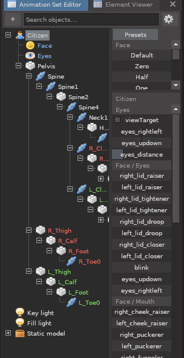
Cog → Tree: skeleton (as in Ragdoll Mover) shows each character's bones in their real hierarchy instead of control groups. Physical bones and bones without physics have different icons; the right side is red, the left side green. Skeleton shows adds bones without a physics object and bonemerged models (under their model). Tree: objects only hides both.
Шестерёнка → Tree: skeleton (as in Ragdoll Mover) показывает кости каждого персонажа в их настоящей иерархии вместо групп управления. У физических костей и костей без физики разные значки; правая сторона красная, левая зелёная. Skeleton shows добавляет кости без физического объекта и модели на бонмёрдже (под своей моделью). Tree: objects only прячет и то, и другое.
Click a bone to select it; the bone under the mouse is marked in the viewports. Right-click a bone to lock it to another bone (Posing).
Щелчок по кости выделяет её; кость под мышью подсвечивается во вьюпортах. Правый щелчок по кости — прикрепить её к другой кости (Позы).
SelectingВыделение
- LMB on an object in a viewport or in the tree selects it. LMB on a bone marker selects that bone.
- Ctrl + LMB adds an object to the selection or removes it. Several selected objects are moved, rotated, scaled, duplicated and deleted together.
- Click on empty space or use Edit → Deselect to clear the selection.
- ЛКМ по объекту во вьюпорте или в дереве выделяет его. ЛКМ по маркеру кости выделяет эту кость.
- Ctrl + ЛКМ добавляет объект к выделению или убирает его. Несколько выделенных объектов двигаются, вращаются, масштабируются, дублируются и удаляются вместе.
- Щелчок по пустому месту или Edit → Deselect снимает выделение.
The object menuМеню объекта
A short RMB click on an object (without moving the mouse) in the viewport or in the tree opens its menu.
Короткий щелчок ПКМ по объекту (не двигая мышь) во вьюпорте или в дереве открывает его меню.
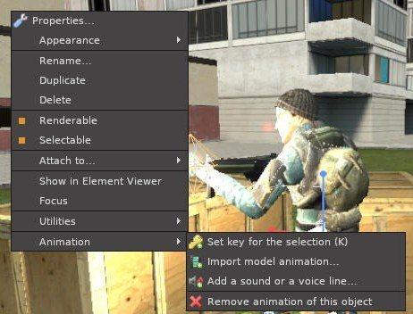
- Properties…
- Colour, textures, size, shadow (below).
- Appearance
- Quick colour, remove / restore textures, cast shadow, reset.
- Rename… / Duplicate / Delete
- As named.
- Renderable
- Off: the object is hidden in viewports and renders.
- Selectable
- Off: the object is locked and cannot be clicked by accident.
- Attach to…
- See Attaching and wearing.
- Show in Element Viewer / Focus
- As named.
- Utilities
- Drop to floor, 3-point rig, reset pose, copy / paste pose.
- Set Skin / Set Body
- Skins and bodygroups of the model.
- Animation
- SAeditor: set a key, import an animation, add a sound.
- Properties…
- Цвет, текстуры, размер, тень (ниже).
- Appearance
- Быстрый цвет, убрать / вернуть текстуры, тень, сброс.
- Rename… / Duplicate / Delete
- Переименовать, дублировать, удалить.
- Renderable
- Выключено: объект скрыт во вьюпортах и в рендере.
- Selectable
- Выключено: объект заблокирован, его нельзя случайно выделить.
- Attach to…
- См. Привязка и одежда.
- Show in Element Viewer / Focus
- Показать в Element Viewer / навести камеру.
- Utilities
- На пол, трёхточечный свет, сброс позы, копировать / вставить позу.
- Set Skin / Set Body
- Скины и бодигруппы модели.
- Animation
- SAeditor: ключ, импорт анимации, звук.
Cameras and lights also have Aim camera at object…; cameras have Look through this camera and Match camera to work view; effects have Play from the start and Choose another effect….
У камер и света есть Aim camera at object… (навести на объект); у камер — Look through this camera и Match camera to work view; у эффектов — Play from the start и Choose another effect….
Object PropertiesСвойства объекта
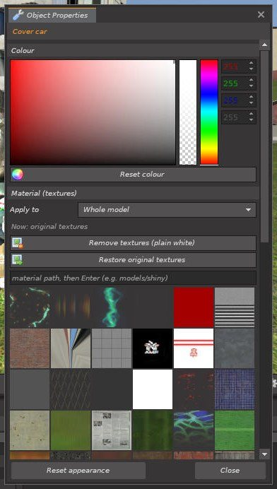
- Colour
- Tint and opacity (the fourth field is alpha: below 255 the object becomes see-through). Reset colour returns white.
- Material
- Replace textures for the Whole model or one material slot. Pick a material from the grid or type a path such as
models/shiny. Remove textures makes the model plain white so it takes the object colour; Restore original textures undoes it. - Size
- Props only: overall scale and stretching in length (X), width (Y) and height (Z). The Scale tool 4 does the same with the mouse.
- Shadow
- Cast shadow off removes the object from shadow maps — useful for an object in front of a lamp.
- Reset appearance
- Everything back to the original.
- Colour
- Оттенок и прозрачность (четвёртое поле — альфа: ниже 255 объект становится прозрачным). Reset colour возвращает белый.
- Material
- Замена текстур для всей модели (Whole model) или одного слота материала. Выберите материал из сетки или введите путь, например
models/shiny. Remove textures делает модель белой, и она принимает цвет объекта; Restore original textures возвращает текстуры. - Size
- Только пропы: общий масштаб и растяжение по длине (X), ширине (Y) и высоте (Z). Инструмент масштаба 4 делает то же мышью.
- Shadow
- Выключенный Cast shadow убирает объект из теней — полезно для предмета перед лампой.
- Reset appearance
- Вернуть всё как было.
Element Viewer
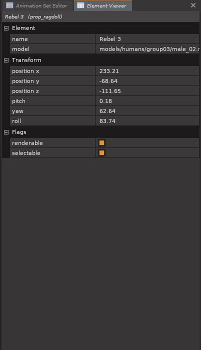
The Element Viewer tab (next to the Animation Set Editor) shows every property of the selection as numbers: name, model, position x/y/z, pitch/yaw/roll, scale, skin, renderable, selectable, and for lights and cameras all their settings with SFM names (intensity, fieldOfView, castsShadows, shadowFilterSize…). Type a value for exact placement.
Вкладка Element Viewer (рядом с Animation Set Editor) показывает все свойства выделения числами: имя, модель, позиция x/y/z, pitch/yaw/roll, масштаб, скин, renderable, selectable, а для света и камер — все настройки с именами из SFM (intensity, fieldOfView, castsShadows, shadowFilterSize…). Вводите значения для точной расстановки.
Any slider in SPeditor: Shift + drag is fine, Ctrl + drag is coarse; right-click a slider for Reset to default and Enter value….
Любой слайдер в SPeditor: Shift + перетаскивание — точно, Ctrl + перетаскивание — грубо; правый щелчок по слайдеру — Reset to default и Enter value….
PosingПозы
Everything is posed with one gizmo: whole objects and single bones, including fingers.
Всё позируется одним гизмо: объекты целиком и отдельные кости, включая пальцы.
The gizmoГизмо
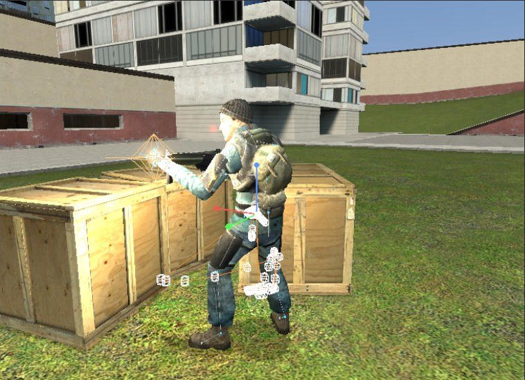
| KeyКлавиша | ToolИнструмент |
|---|---|
| 1 | Move. Drag an arrow to move along an axis, the centre to move in the screen plane.Перемещение. Тяните стрелку для движения по оси, центр — для движения в плоскости экрана. |
| 2 | Rotate. Drag a coloured ring to turn around its axis. new The white outer ring turns around the line of sight (as you see it on the screen); drag anywhere inside the rings for a trackball — the bone rolls after the mouse in every direction at once. A click there without dragging still selects the bone under the cursor.Вращение. Тяните цветное кольцо, чтобы повернуть вокруг его оси. new Белое внешнее кольцо поворачивает вокруг линии взгляда (так, как вы видите на экране); тяните где угодно внутри колец — трекбол: кость катится за мышью во все стороны сразу. Простой щелчок там по-прежнему выделяет кость под курсором. |
| 4 | Scale. The centre scales evenly, an axis stretches along it. Works on props and on bones of any model.Масштаб. Центр — равномерно, ось — растяжение по ней. Работает на пропах и на костях любой модели. |
| 3 | World / local axes. Local axes follow the object's own rotation.Мировые / локальные оси. Локальные оси следуют повороту самого объекта. |
| I | Inverse kinematics. Move a hand or a foot and the whole arm or leg follows.Инверсная кинематика. Двигайте кисть или стопу — рука или нога следует за ней. |
Plane handlesРучки плоскостей
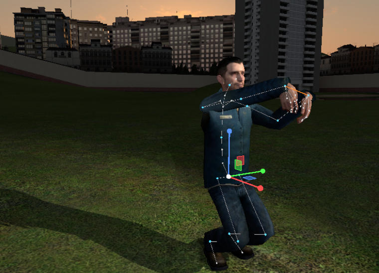
The Move gizmo has three small coloured squares between its axes. Drag one to move in two axes at once: the square lying flat moves along the floor, the upright ones along a wall — the third axis does not change.
У гизмо перемещения между осями есть три цветных квадратика. Тяните квадратик, чтобы двигать сразу по двум осям: лежащий — по полу, стоячие — вдоль стены; третья ось не меняется.
BonesКости
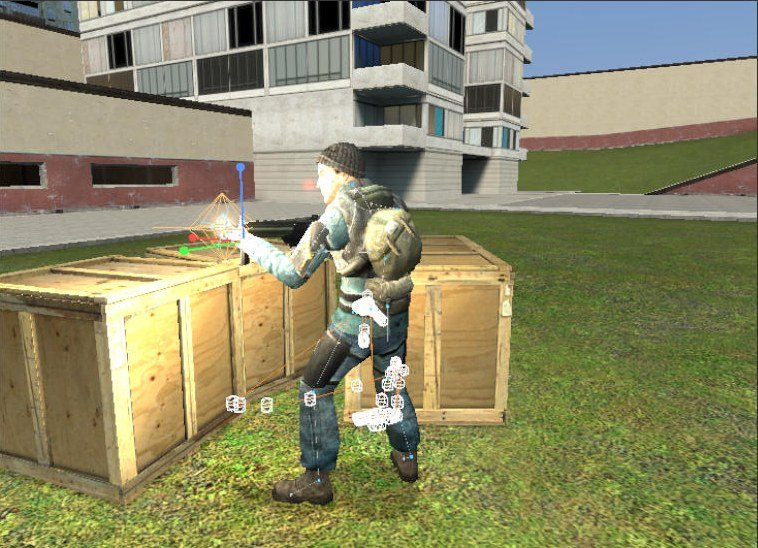
Click a bone marker to select the bone, or click a row Bone - pos / - rot / - scale in the Animation Set Editor: it selects the bone and the matching tool at once.
Щёлкните по маркеру кости, чтобы выделить её, или по строке Кость - pos / - rot / - scale в Animation Set Editor: она сразу выделяет кость и нужный инструмент.
Bones with a physics body (pelvis, spine, head, upper arms, forearms, hands, thighs, calves, feet) move the ragdoll itself. Bones without one (clavicles, fingers, toes, face bones) are moved with bone offsets. Both are saved in poses and animated by SAeditor.
Кости с физическим телом (таз, позвоночник, голова, плечи, предплечья, кисти, бёдра, голени, стопы) двигают сам рэгдолл. Кости без него (ключицы, пальцы, пальцы ног, кости лица) двигаются смещениями костей. И то, и другое сохраняется в позах и анимируется SAeditor.
With View → Toggle Skeleton (B) the markers are hidden; View → Bone size makes them larger or smaller.
View → Toggle Skeleton (B) прячет маркеры; View → Bone size делает их больше или меньше.
A click on the body of the selected character picks the body part under the cursor — no need to hit the small markers.
Щелчок по телу выделенного персонажа выбирает часть тела под курсором — не нужно попадать в маленькие маркеры.
Scaling bonesМасштаб костей
Select any bone and press 4 (or click its - scale row): a big head, long arms, a giant hand. In a0.3 the Scale tool worked only on bones without physics (fingers) and silently acted as Move on a hand or the head; a0.4 scales every bone.
Выделите любую кость и нажмите 4 (или строку - scale): большая голова, длинные руки, огромная кисть. В a0.3 масштаб работал только на костях без физики (пальцах), а на кисти или голове молча превращался в перемещение; в a0.4 масштабируется любая кость.
IK keeps the feet plantedIK держит стопы на месте
With IK on, moving or turning the pelvis keeps both feet where they stand and bends the knees: a character crouches, leans or shifts its weight in one drag. Switch it off with View → IK: keep the feet planted when the body moves.
С включённым IK движение или поворот таза оставляет обе стопы на месте и сгибает колени: персонаж приседает, наклоняется или переносит вес одним движением. Выключается через View → IK: keep the feet planted when the body moves.
Locking a bone to another boneПрикрепление кости к кости
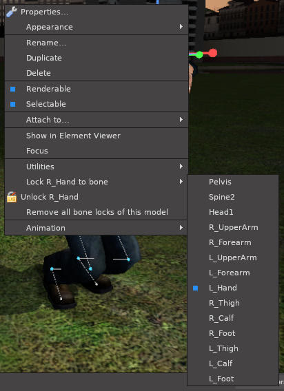
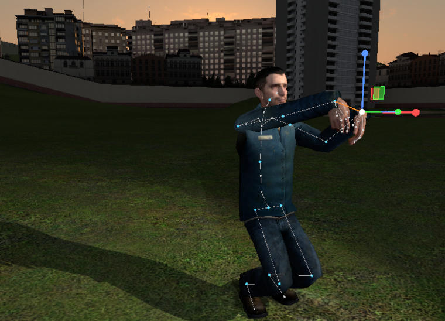
Select a physical bone, for example the right hand, right-click → Lock R_Hand to bone and pick the bone it should hold on to — the left hand. From then on it follows that bone; with IK on it pulls its whole arm. Two hands on a rifle, a sword or a steering wheel stay together while you pose. Unlock and Remove all bone locks of this model are in the same menu (in the skeleton tree: right-click a bone). Locks are saved with the scene.
Выделите физическую кость, например правую кисть, правый щелчок → Lock R_Hand to bone и выберите кость, за которую ей держаться, — левую кисть. Теперь она следует за ней; с IK тянет за собой всю руку. Две руки на винтовке, мече или руле остаются вместе, пока вы ставите позу. Unlock и Remove all bone locks of this model — в том же меню (в дереве-скелете — правый щелчок по кости). Крепления сохраняются со сценой.
Models without physicsМодели без физики
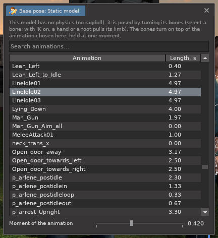
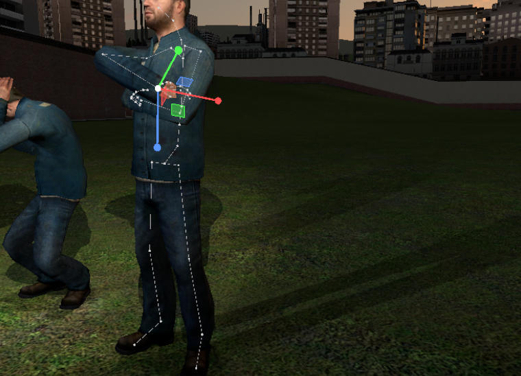
Some models have bones but no physics skeleton — for example characters ported from SFM as props. They now stand still and are posed by turning their bones: select a bone and rotate it, or turn on IK and drag a hand or a foot. Object menu → Base pose chooses an animation of the model and its moment; your bone turns are added on top. Model animations can be imported onto such models too.
У некоторых моделей есть кости, но нет физического скелета — например, персонажи, перенесённые из SFM как пропы. Теперь они стоят неподвижно и позируются поворотом костей: выделите кость и поверните её или включите IK и тяните кисть или стопу. Меню объекта → Base pose выбирает анимацию модели и её момент; ваши повороты костей добавляются поверх. На такие модели тоже можно импортировать анимации.
Face and eyesЛицо и глаза
- Face presets at the top: Default, Zero, Half, One set all flexes at once.
- Flex sliders are grouped as Brows, Eyes, Nose, Mouth, Other (e.g. smile, jaw_drop, blink). Models without face flexes do not show the section.
- Eyes: tick viewTarget to aim the eyes; eyes_rightleft, eyes_updown and eyes_distance set where they look.
- Skins and bodygroups: object menu → Set Skin / Set Body.
- Пресеты лица вверху: Default, Zero, Half, One задают все флексы сразу.
- Слайдеры мимики сгруппированы: Brows, Eyes, Nose, Mouth, Other (например, smile, jaw_drop, blink). У моделей без мимики раздела нет.
- Глаза: включите viewTarget, чтобы направить взгляд; eyes_rightleft, eyes_updown и eyes_distance задают, куда он смотрит.
- Скины и бодигруппы: меню объекта → Set Skin / Set Body.
Poses: copy, paste, libraryПозы: копирование и библиотека
- Ctrl+C / Ctrl+V copy the pose of the selected character and paste it onto another. Between different models with the same skeleton the pose is carried over by bone names, keeping each model's proportions.
- The Pose library in the Scene tab: Save pose, Load pose, Delete. The list shows the pose name and the model it was made on.
- Utilities → Reset pose of selected returns bones, face and eyes to the original.
- Ctrl+C / Ctrl+V копируют позу выделенного персонажа и вставляют её другому. Между разными моделями с одинаковым скелетом поза переносится по именам костей с сохранением пропорций каждой модели.
- Библиотека поз во вкладке Scene: Save pose, Load pose, Delete. В списке — имя позы и модель, на которой она сделана.
- Utilities → Reset pose of selected возвращает кости, лицо и глаза в исходное состояние.
Addons that change ragdolls (active ragdoll systems, Fedhoria-like mods) can fight SPeditor and make limbs impossible to pose. If limbs jump back or fall, disable such addons while you work in the editor.
Аддоны, меняющие рэгдоллы (активные рэгдоллы, моды наподобие Fedhoria), могут мешать SPeditor, и конечности перестают позироваться. Если конечности отскакивают или падают, отключите такие аддоны на время работы в редакторе.
Attaching and wearingПривязка и одежда
Objects can follow other objects: a weapon in a hand, a hat on a head, a muzzle flash on a gun, or clothing that bends with the body.
Объекты могут следовать за другими: оружие в руке, шляпа на голове, вспышка на стволе или одежда, которая гнётся вместе с телом.
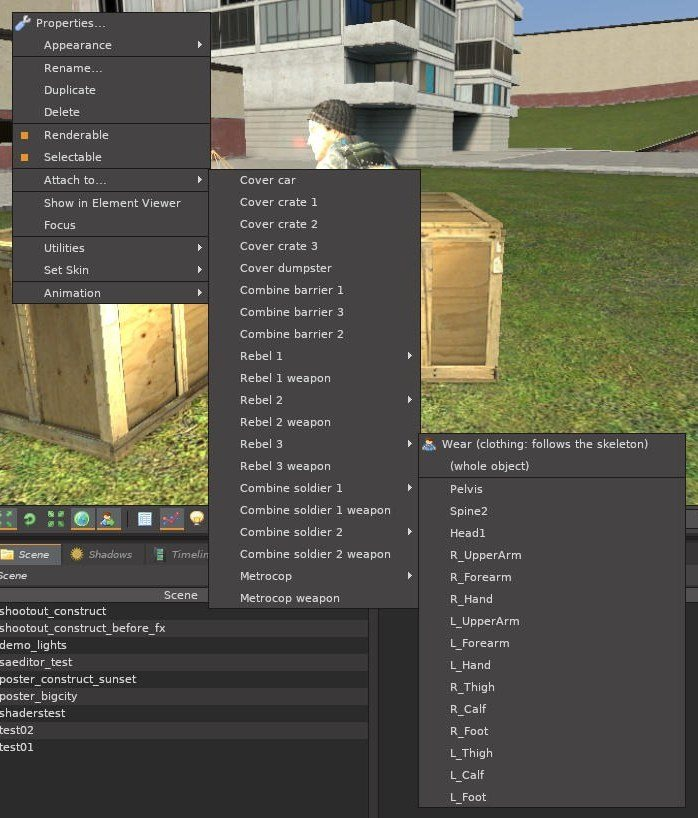
Three ways to attachТри способа привязки
| ChoiceПункт | ResultРезультат | Use forДля чего |
|---|---|---|
| R_Hand, Head1… | Follows that bone rigidly, keeping its offset.Жёстко следует за костью, сохраняя смещение. | Weapons, props in hands, hats, helmets as separate props.Оружие, предметы в руках, шляпы, шлемы-пропы. |
| (whole object) | Follows the object's root (pelvis of a character).Следует за корнем объекта (тазом персонажа). | A rider on a vehicle, a light on a car.Наездник на транспорте, фара на машине. |
| Wear | Every bone of the worn model follows the bone with the same name on the wearer (bone merge).Каждая кость надетой модели следует за одноимённой костью носителя (bone merge). | Clothing, armour, hair, accessories made for the same skeleton (e.g. ValveBiped).Одежда, броня, волосы, аксессуары под тот же скелет (например, ValveBiped). |
Putting clothes on a characterКак надеть одежду на персонажа
- Add the clothing model (from a clothing addon) and the character.
- Right-click the clothing → Attach to… → the character → Wear (clothing: follows the skeleton).
- Pose the character: the clothing bends with every limb. Skin, bodygroups and colour of the clothing still work.
- To take it off: object menu → Detach.
- Добавьте модель одежды (из аддона с одеждой) и персонажа.
- Правый щелчок по одежде → Attach to… → персонаж → Wear (одежда: гнётся по скелету).
- Позируйте персонажа: одежда гнётся вместе с каждой конечностью. Скин, бодигруппы и цвет одежды продолжают работать.
- Чтобы снять: меню объекта → Detach.
Before a0.4 clothing could only be attached rigidly to one bone, so it did not follow the arms and legs. Wear arrives in a0.4; it is saved with the scene, survives duplicating and can be undone.
До a0.4 одежду можно было привязать только жёстко к одной кости, поэтому она не следовала за руками и ногами. Wear появляется в a0.4; он сохраняется в сцене, переживает дублирование и отменяется.
Wearing works only when the bone names match. A model made for another skeleton (TF2, a custom rig) stays at the wearer's root. You can still click and select the worn object: its invisible copy stays where it was attached.
Одежда работает только при совпадении имён костей. Модель под другой скелет (TF2, свой риг) остаётся у корня носителя. Надетый объект по-прежнему можно выделить щелчком: его невидимая копия стоит там, где его привязали.
RulesПравила
- Move an attached object by hand and the new offset is kept.
- Chains are allowed (a scope on a gun in a hand); an object cannot be attached to its own child.
- When the parent is deleted, the object stays where it was.
- Attachments are saved in scenes and followed in SAeditor animations.
- Сдвиньте привязанный объект вручную — новое смещение сохранится.
- Цепочки разрешены (прицел на оружии в руке); объект нельзя привязать к его же потомку.
- Если родителя удалить, объект остаётся на месте.
- Привязки сохраняются в сценах и работают в анимациях SAeditor.
LightsСвет
Light makes a poster. SPeditor has point lights and spot lights; spot lights cast shadows and have a soft edge, penumbra, a glow and a visible beam.
Постер делает свет. В SPeditor есть точечный свет и прожекторы; прожекторы отбрасывают тени, у них есть мягкий край, полутень, свечение и видимый луч.
Point and spotТочечный и прожектор
| Point lightТочечный свет | Spot lightПрожектор | |
|---|---|---|
| ShinesСветит | in all directionsво все стороны | in a cone or through a maskконусом или через маску |
| ShadowsТени | no (an engine limit)нет (ограничение движка) | yes, soft, adjustableда, мягкие, настраиваемые |
| Good forПодходит для | fill light, neon, fire, bulbs, muzzle flashesзаполняющий свет, неон, огонь, лампы, вспышки выстрелов | key and rim light, sun, windows, lampsосновной и контровой свет, солнце, окна, фонари |
Switch a light between the two kinds with its Type control in the Animation Set Editor.
Тип источника переключается полем Type в Animation Set Editor.
Light kindsВиды света
+ → Soft light creates a light already set up for a purpose. With a light selected, the Light kinds list at the top of the right column turns that light into another kind.
+ → Soft light создаёт источник, уже настроенный под задачу. Если источник выделен, список Light kinds вверху правой колонки превращает его в другой вид.
| KindВид | What it isЧто это |
|---|---|
| Softbox | Large soft key light, the studio standard.Большой мягкий основной свет, студийный стандарт. |
| Strip light | A narrow tall softbox for edges and reflections.Узкий высокий софтбокс для контуров и бликов. |
| Beauty dish | Round, contrasty portrait light.Круглый контрастный портретный свет. |
| Ring light | Ring around the lens: flat face light, round catchlights.Кольцо вокруг объектива: ровный свет на лице, круглые блики в глазах. |
| Rim light | Back light that outlines the silhouette.Контровой свет, обводящий силуэт. |
| Window light | Daylight through a window frame.Дневной свет через оконную раму. |
| Light through blinds | Stripes of light, the noir look.Полосы света, нуарный стиль. |
| Sun through leaves | Dappled sunlight.Пятнистый солнечный свет сквозь листву. |
| Golden hour sun | Low warm sun with long shadows.Низкое тёплое солнце с длинными тенями. |
| Sunset gel | A coloured gradient of sunset light.Цветной градиент закатного света. |
| Moonlight | Cold dim parallel light.Холодный тусклый параллельный свет. |
| Stage spot | Hard round spot with a visible beam.Жёсткое круглое пятно с видимым лучом. |
| Street lamp | Warm cone from above.Тёплый конус сверху. |
| Headlight | Car headlight with a glow.Автомобильная фара со свечением. |
| Red and blue beacon | Police lights.Полицейская мигалка. |
| Eye slit | A narrow strip of light across the eyes.Узкая полоса света на глазах. |
| Candle · Light bulb · Neon glow | Small point sources with a visible glow.Небольшие точечные источники с видимым свечением. |
Presets (colour only): Soft white, Warm lamp, Cool moonlight, Neon cyan, Neon magenta, Fire. Create 3-point light rig places key, fill and rim lights around the selected model.
Presets (только цвет): Soft white, Warm lamp, Cool moonlight, Neon cyan, Neon magenta, Fire. Create 3-point light rig ставит основной, заполняющий и контровой свет вокруг выделенной модели.
Light settingsНастройки источника
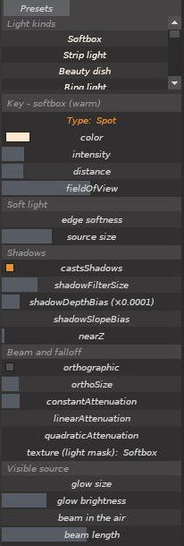
- color · intensity
- Colour (click the swatch for a palette and a mixer) and brightness.
- distance · fieldOfView
- How far the light reaches; the cone angle of a spot.
- edge softness
- 0 keeps the mask as it is, 1 fades the light from the centre to the edge.
- source size
- Size of the lamp: a larger source gives softer shadows that blur with distance (penumbra). Calculated in the render and its preview.
- castsShadows · shadowFilterSize
- Shadows on/off and the blur of their edge.
- shadowDepthBias · shadowSlopeBias
- Raise if lit surfaces get stripes; lower if the shadow detaches from the object.
- nearZ
- The light starts at this distance from the source.
- orthographic · orthoSize
- A parallel square beam like sunlight: shadows keep their size at any distance.
- constant / linear / quadratic attenuation
- Falloff with distance. Quadratic is like a real lamp; constant does not fade at all (good for far subjects).
- texture (light mask)
- The shape of the beam: soft masks of SPeditor (softbox, strip, round, ring, window, blinds, bars, slit, leaves, sunset…), Lamp tool textures, other game textures or any texture by path.
- glow size · glow brightness
- A visible glow around the source, like a headlight or a beacon.
- beam in the air · beam length
- A visible cone of light, as in dust or fog.
- color · intensity
- Цвет (щелчок по образцу — палитра и смеситель) и яркость.
- distance · fieldOfView
- Дальность света; угол конуса прожектора.
- edge softness
- 0 — маска как есть, 1 — свет плавно гаснет от центра к краю.
- source size
- Размер лампы: чем больше, тем мягче тень, размывающаяся с расстоянием (полутень). Считается в рендере и его превью.
- castsShadows · shadowFilterSize
- Тени вкл/выкл и размытие их края.
- shadowDepthBias · shadowSlopeBias
- Увеличьте, если на освещённых поверхностях полосы; уменьшите, если тень отрывается от объекта.
- nearZ
- Свет начинается на этом расстоянии от источника.
- orthographic · orthoSize
- Параллельный квадратный луч как солнце: тени не меняют размер с расстоянием.
- constant / linear / quadratic attenuation
- Затухание с расстоянием. Квадратичное — как у настоящей лампы; постоянное — не затухает вовсе (для дальних объектов).
- texture (light mask)
- Форма луча: мягкие маски SPeditor (софтбокс, полоса, круг, кольцо, окно, жалюзи, решётка, щель, листва, закат…), текстуры инструмента Lamp, другие текстуры игры или любая текстура по пути.
- glow size · glow brightness
- Видимое свечение вокруг источника, как у фары или маячка.
- beam in the air · beam length
- Видимый конус света, как в пыли или тумане.
Every shadow-casting spot light costs FPS. The Shadows tab limits how many of them cast shadows at once. Penumbra (source size) is only calculated in the render; the viewports show a sharp shadow.
Каждый прожектор с тенями стоит FPS. Вкладка Shadows ограничивает, сколько из них отбрасывают тени одновременно. Полутень (source size) считается только в рендере; во вьюпортах тень резкая.
ShadowsТени
The Shadows tab of the bottom window controls two different things: shadows of the editor's spot lights and the simple prop shadows the map's own lighting casts.
Вкладка Shadows нижнего окна управляет двумя разными вещами: тенями прожекторов редактора и простыми тенями пропов от освещения самой карты.
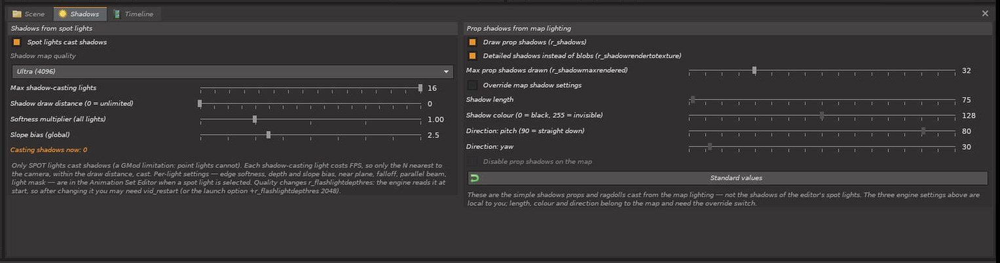
Shadows from spot lightsТени от прожекторов
- Spot lights cast shadows
- The master switch.
- Shadow map quality
- Low, Medium, High, Ultra. The engine reads it at start: after a change you may need
vid_restartor the launch option+r_flashlightdepthres 2048. - Max shadow-casting lights
- Only the N lights nearest to the camera cast shadows. The line below shows how many cast now.
- Shadow draw distance
- A light whose lit area is farther than this casts no shadow (0 = unlimited). Saves FPS in large scenes.
- Softness multiplier
- Multiplies the edge blur of every light.
- Slope bias (global)
- Removes stripes on surfaces lit at a shallow angle; each light can override it.
- Spot lights cast shadows
- Общий выключатель.
- Shadow map quality
- Low, Medium, High, Ultra. Движок читает значение при запуске: после изменения может понадобиться
vid_restartили параметр запуска+r_flashlightdepthres 2048. - Max shadow-casting lights
- Тени отбрасывают только N ближайших к камере источников. Строка ниже показывает, сколько их сейчас.
- Shadow draw distance
- Источник, освещённая область которого дальше этого расстояния, теней не даёт (0 — без ограничения). Экономит FPS в больших сценах.
- Softness multiplier
- Умножает размытие края тени у всех источников.
- Slope bias (global)
- Убирает полосы на поверхностях, освещённых под острым углом; у каждого источника может быть своё значение.
Prop shadows from map lightingТени пропов от освещения карты
These are the soft blobs or silhouettes that props and ragdolls drop from the map's sun. Draw prop shadows, Detailed shadows instead of blobs and Max prop shadows drawn are local engine settings. Length, colour and direction belong to the map: tick Override map shadow settings to change them (this affects every player on a server; untick to restore). Disable prop shadows on the map removes them entirely.
Это мягкие пятна или силуэты, которые пропы и рэгдоллы отбрасывают от солнца карты. Draw prop shadows, Detailed shadows instead of blobs и Max prop shadows drawn — локальные настройки движка. Длина, цвет и направление принадлежат карте: отметьте Override map shadow settings, чтобы их менять (на сервере это действует на всех игроков; снимите отметку, чтобы вернуть). Disable prop shadows on the map убирает их совсем.
CamerasКамеры
Scene cameras are objects of the scene. A render is always taken through a scene camera (or through the Primary Viewport), and camera effects belong to scene cameras.
Камеры сцены — объекты сцены. Рендер всегда снимается через камеру сцены (или через Primary Viewport), а эффекты камеры принадлежат камерам сцены.
Creating and aimingСоздание и наведение
- + → Spawn Camera creates a camera exactly at the work camera's position and angle.
- Match camera to work view (object menu) moves an existing camera to where you look now.
- Aim camera at object… turns it towards any object.
- Move and rotate it with the gizmo like any object.
- + → Spawn Camera создаёт камеру точно в позиции и под углом рабочей камеры.
- Match camera to work view (меню объекта) переносит существующую камеру туда, куда вы сейчас смотрите.
- Aim camera at object… поворачивает её к любому объекту.
- Двигайте и вращайте её гизмо, как любой объект.
Looking through a cameraВзгляд через камеру
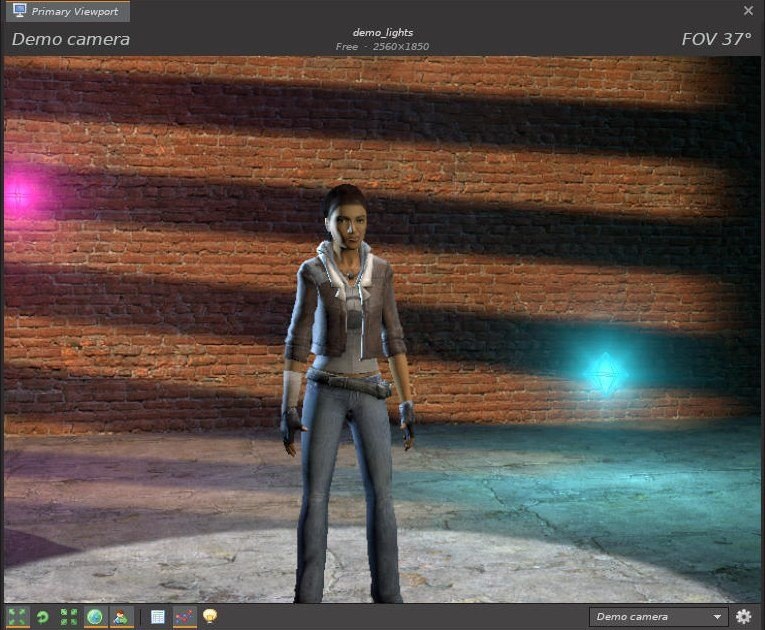
Select a camera and press V, choose it in the viewport's camera list, or tick Look through this camera. The header then shows the camera name. Flying with RMB+WASD now moves the scene camera itself — the fastest way to frame a shot. V goes back to the work camera.
Выделите камеру и нажмите V, выберите её в списке камер вьюпорта или отметьте Look through this camera. В заголовке появится имя камеры. Полёт с ПКМ+WASD теперь двигает саму камеру сцены — самый быстрый способ выстроить кадр. V возвращает рабочую камеру.
Camera settingsНастройки камеры
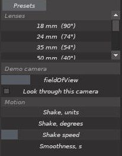
- Lenses
- Ready focal lengths: 18 mm (90°), 24 mm (74°), 35 mm (54°), 50 mm (40°) and longer.
- fieldOfView
- Any angle.
- Shake, units / degrees
- How far the camera is thrown about and turned. A small value gives a handheld camera.
- Shake speed
- Shakes per second: 1–2 handheld, 8+ an explosion or an engine.
- Smoothness, s
- In an animation the camera floats through its keys instead of stopping at each one.
- Lenses
- Готовые фокусные расстояния: 18 мм (90°), 24 мм (74°), 35 мм (54°), 50 мм (40°) и длиннее.
- fieldOfView
- Любой угол.
- Shake, units / degrees
- Насколько камеру бросает и поворачивает. Малое значение — съёмка с рук.
- Shake speed
- Толчков в секунду: 1–2 — с рук, от 8 — взрыв или двигатель.
- Smoothness, s
- В анимации камера плавно проходит через ключи, не останавливаясь на каждом.
A camera's own depth of field (focus distance, aperture, quality) and exposure, as in SFM, are set in the Render window under Camera effects → Camera (as in SFM). See Rendering.
Собственная глубина резкости камеры (дистанция фокуса, диафрагма, качество) и экспозиция, как в SFM, задаются в окне рендера в разделе Camera effects → Camera (as in SFM). См. Рендер.
EffectsЭффекты
Explosions, fire, smoke, blood, sparks and muzzle flashes are objects too. A particle effect can be stopped at any moment and stays frozen in the viewport and in the render.
Взрывы, огонь, дым, кровь, искры и вспышки выстрелов — тоже объекты. Эффект частиц можно остановить в любой момент, и он остаётся застывшим во вьюпорте и в рендере.
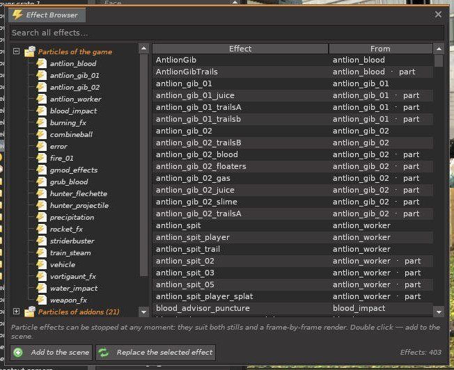
Kinds of effectsВиды эффектов
| GroupГруппа | Can be frozenМожно остановить | NotesЗаметки |
|---|---|---|
| Particles of the game / of addons | ✓ | The best choice for stills and frame-by-frame video. Includes every particle file of installed Workshop addons.Лучший выбор для статичных кадров и покадрового видео. Включает все файлы частиц установленных аддонов. |
| Emitter tool effects | — | Play by themselves; a still render starts them and waits for the chosen moment.Играют сами; рендер кадра запускает их и ждёт выбранного момента. |
| Engine effects · Lua effects | — | Some need a weapon or a character and show nothing alone.Некоторым нужно оружие или персонаж, без них они ничего не показывают. |
Effect settingsНастройки эффекта
- Moment, s
- How long after its start the effect is shown. 0 means it has not started yet. After a move or a change of the moment the effect is replayed up to that moment, which takes as long as the moment itself.
- Size
- Scale of the effect (not every effect uses it).
- Length
- Distance to the second point: where a tracer or a beam goes. 0 means a one-point effect.
- Moment, s
- Через сколько секунд после начала показан эффект. 0 — он ещё не начался. После перемещения или смены момента эффект проигрывается заново до этого момента — это занимает столько же времени, сколько сам момент.
- Size
- Масштаб эффекта (используют не все эффекты).
- Length
- Расстояние до второй точки: куда летит трассер или луч. 0 — эффект из одной точки.
Effects can be attached to an object or a bone (a flash on a muzzle), duplicated, hidden, aimed and saved with the scene. In SAeditor, Play the effect from this frame keys the moment for you.
Эффекты можно привязать к объекту или кости (вспышка на стволе), дублировать, скрывать, наводить и сохранять в сцене. В SAeditor пункт Play the effect from this frame сам расставляет ключи момента.
An effect advances one game frame at a time. Render animations with the game window focused: an unfocused game runs at about 20 FPS, and effects shorter than a frame (a muzzle flash lasts ~0.03 s) may not show.
Эффект продвигается на один игровой кадр за раз. Рендерите анимации, когда окно игры в фокусе: без фокуса игра идёт примерно на 20 FPS, и эффекты короче кадра (вспышка выстрела длится ~0,03 с) могут не показаться.
RenderingРендер
The Render window turns the scene into a picture. It renders off-screen, so the interface never gets into the file, and shows a live preview of exactly what you will get.
Окно Render превращает сцену в картинку. Рендер идёт вне экрана, поэтому интерфейс никогда не попадает в файл, а живое превью показывает ровно то, что получится.
Open it with the Render button at the top right, File → Render… or the viewport gear menu.
Откройте его кнопкой Render справа вверху, через File → Render… или меню-шестерёнку вьюпорта.
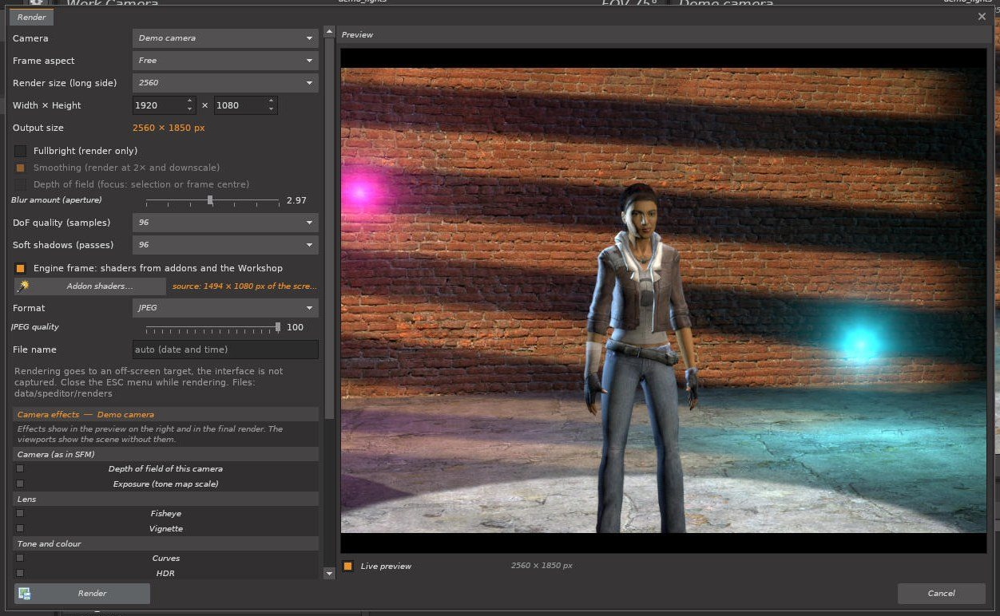
SettingsНастройки
| SettingНастройка | MeaningЗначение |
|---|---|
| Camera | A scene camera, or Primary Viewport source (whatever the Primary Viewport shows).Камера сцены или Primary Viewport source (то, что показывает главный вьюпорт). |
| Frame aspect | Free (the viewport's shape), 2:3 poster, A-series paper and other ratios.Free (форма вьюпорта), 2:3 постер, формат A и другие пропорции. |
| Render size (long side) | The long side of the picture, up to 3840 px. Custom size sets width × height exactly. Output size shows the result.Длинная сторона картинки, до 3840 px. Custom size задаёт ширину × высоту точно. Output size показывает итог. |
| Fullbright (render only) | Render without lighting.Рендер без освещения. |
| Smoothing | Renders at 2× and scales down: clean edges.Рендер в 2× и уменьшение: чистые края. |
| Depth of field | Focus on the selection or the frame centre; Blur amount (aperture) and DoF quality (passes).Фокус на выделении или центре кадра; Blur amount (диафрагма) и DoF quality (проходы). |
| Soft shadows (passes) | How many times the scene is rendered for lights with a source size. More passes, smoother penumbra, longer render.Сколько раз сцена рендерится для источников с source size. Больше проходов — плавнее полутень, дольше рендер. |
| Engine frame | Lets the game's own renderer draw the picture so that post-processing addons and Workshop shaders get in. See Shaders.Картинку рисует сам рендерер игры, и в неё попадают аддоны постобработки и шейдеры Workshop. См. Шейдеры. |
| Format · JPEG quality | PNG (lossless), JPEG or new Steam screenshot: the PNG is saved and the picture also goes into your Steam screenshots — the game shows it full screen for a moment and takes a screenshot. Publish it from Steam → View → Screenshots → Garry's Mod → Upload. The Steam copy has the size of your screen.PNG (без потерь), JPEG или new Steam screenshot: PNG сохраняется, и картинка ещё попадает в ваши скриншоты Steam — игра на мгновение показывает её на весь экран и делает скриншот. Опубликовать: Steam → Вид → Скриншоты → Garry's Mod → Загрузить. Копия в Steam размером с ваш экран. |
| File name | Empty means date and time. Files go to data/speditor/renders/.Пусто — дата и время. Файлы попадают в data/speditor/renders/. |
Close the ESC menu while rendering. A large render with depth of field and soft shadows can take a while — the preview shows the progress (“DoF preview: 12 of 96 samples”).
Закройте меню ESC во время рендера. Большой рендер с глубиной резкости и мягкими тенями может занять время — превью показывает прогресс («DoF preview: 12 of 96 samples»).
Camera effectsЭффекты камеры
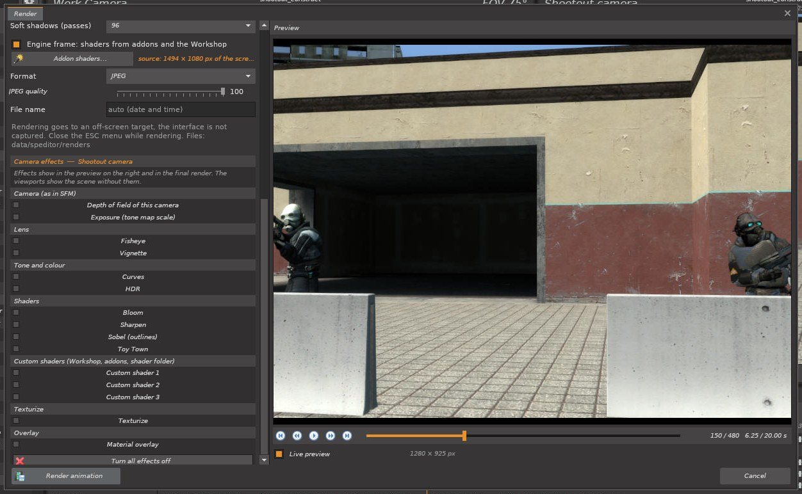
| SectionРаздел | EffectsЭффекты |
|---|---|
| Camera (as in SFM) | Depth of field of this camera (focus distance, aperture, quality) · Exposure (tone map scale)Глубина резкости этой камеры (дистанция фокуса, диафрагма, качество) · Экспозиция (tone map scale) |
| Lens | Fisheye (strength) · Vignette (strength, clear radius)Fisheye (сила) · Vignette (сила, чистый радиус) |
| Tone and colour | Curves for RGB and each channel (click to add a point, drag to move, right-click to remove) · HDRКривые для RGB и каждого канала (щелчок — точка, перетаскивание — сдвиг, правый щелчок — удалить) · HDR |
| Shaders | Bloom · Sharpen · Sobel (outlines) · Toy Town |
| Custom shaders | Up to three shader materials from the Workshop, addons or the shader folderДо трёх шейдерных материалов из Workshop, аддонов или папки шейдеров |
| Texturize · Overlay | A texture pattern over the picture · any material over the pictureТекстурный узор поверх картинки · любой материал поверх картинки |
The effects show in the preview and in the final render; the viewports stay clean. The work camera has no effects — choose a scene camera. Turn all effects off resets them.
Эффекты видны в превью и в итоговом рендере; вьюпорты остаются чистыми. У рабочей камеры эффектов нет — выберите камеру сцены. Turn all effects off сбрасывает их.
Animated scenesАнимированные сцены
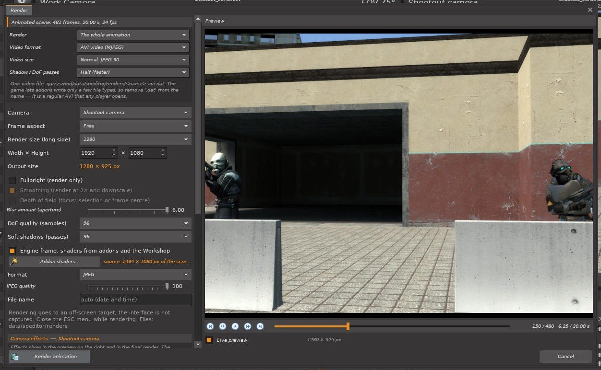
See Animation → Video for the formats, the video frame rate and rendering chosen frames.
Форматы, частота кадров видео и рендер выбранных кадров описаны в разделе Анимация → Видео.
speditor_render in the console renders with the current settings — bind it to a key for quick test shots.
speditor_render в консоли рендерит с текущими настройками — привяжите к клавише для быстрых пробных кадров.
Workshop shadersШейдеры Workshop
Post-processing addons and shader packs from the Workshop can get into your renders in two ways: through Engine frame or as custom shaders.
Аддоны постобработки и шейдерные паки из Workshop попадают в рендер двумя путями: через Engine frame или как пользовательские шейдеры.
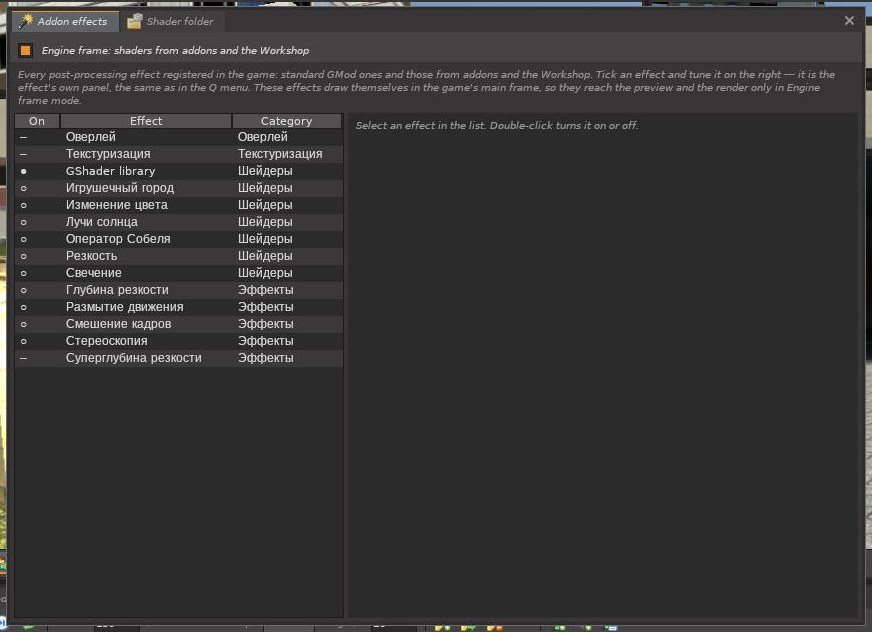
Engine frame
Tick Engine frame in the Render window. The picture is then drawn by the game's renderer through the chosen camera with every enabled effect — standard GMod effects, Workshop shaders and shaders built on GShader Library — and taken from the screen.
Отметьте Engine frame в окне рендера. Тогда картинку рисует рендерер игры через выбранную камеру со всеми включёнными эффектами — стандартными эффектами GMod, шейдерами Workshop и шейдерами на GShader Library — и снимает её с экрана.
Engine frame limits: the picture is no larger than the screen, and 2× smoothing, penumbra and the editor's depth of field are not applied. The Render window shows the source size, e.g. “source: 1494 × 1080 px of the screen”.
Ограничения Engine frame: картинка не больше экрана, 2× сглаживание, полутень и глубина резкости редактора не применяются. Окно рендера показывает исходный размер, например «source: 1494 × 1080 px of the screen».
The shader folderПапка шейдеров
The Shader folder tab of the same window: put a downloaded shader pack (with materials/ and shaders/fxc/, or loose .vmt and .vcs files) into garrysmod/addons/speditor/shaders/ (create the folder if it is missing) and press Rescan. The pack is mounted without restarting the game, and its shaders appear in Camera effects → Custom shader. Lua from a pack is not run: addons with Lua are installed the usual way and work through Engine frame.
Вкладка Shader folder того же окна: положите скачанный пак (с materials/ и shaders/fxc/ или просто файлы .vmt и .vcs) в garrysmod/addons/speditor/shaders/ (создайте папку, если её нет) и нажмите Rescan. Пак подключается без перезапуска игры, а его шейдеры появляются в Camera effects → Custom shader. Lua из пака не запускается: аддоны с Lua ставятся обычным способом и работают через Engine frame.
On Linux the folder name and the files inside must be lowercase, otherwise the game cannot read them.
На Linux имя папки и файлов внутри должно быть в нижнем регистре, иначе игра не сможет их прочитать.
Animation: keys and the timelineАнимация: ключи и таймлайн
SAeditor is the animation mod that comes with SPeditor. It adds the Timeline tab to the bottom window. You set keys — full snapshots of an object at a frame — and SAeditor calculates the motion between them.
SAeditor — мод анимации, который идёт вместе с SPeditor. Он добавляет вкладку Timeline в нижнее окно. Вы ставите ключи — полные снимки объекта в кадре, — а движение между ними SAeditor считает сам.
Your first animationПервая анимация
- Select an object, leave the playhead on frame 0 and press K. A key appears in the object's row.
- Move the playhead (click the ruler or press . several times), change the object — move it, change the pose, the light colour, the camera angle — and press K again.
- Press Space to play. Between the keys everything is interpolated.
- Выделите объект, оставьте указатель на кадре 0 и нажмите K. В строке объекта появится ключ.
- Передвиньте указатель (щёлкните по линейке или несколько раз нажмите .), измените объект — сдвиньте, смените позу, цвет света, угол камеры — и снова нажмите K.
- Нажмите Space, чтобы проиграть. Между ключами всё интерполируется.
A key remembers everything about the object: position, physics pose, bone offsets (scale too), face flexes, colour and opacity, light settings, camera FOV and shake, the moment of an effect, and skin and bodygroups (they switch at the key instead of blending).
Ключ помнит об объекте всё: позицию, физическую позу, смещения костей (и масштаб), мимику, цвет и прозрачность, настройки света, FOV и тряску камеры, момент эффекта, а также скин и бодигруппы (они переключаются на ключе, а не смешиваются).
The toolbarПанель инструментов
| ControlЭлемент | ActionДействие |
|---|---|
| Transport buttonsКнопки плеера | First frame (Home), previous key, play / pause (Space), next key, last frame (End), loop playback.Первый кадр (Home), предыдущий ключ, воспроизведение / пауза (Space), следующий ключ, последний кадр (End), зацикливание. |
| frame | Current frame; type a number to jump. Next to it: total frames and time.Текущий кадр; введите число, чтобы перейти. Рядом — всего кадров и время. |
| fps · length, s | Frame rate (12, 15, 24, 30, 60) and length in seconds — up to an hour (it was 3600 frames).Частота кадров (12, 15, 24, 30, 60) и длина в секундах — до часа (было 3600 кадров). |
| Key buttonsКнопки ключей | Set key for the selection (K), face key (the smile, Shift+K), set key for every object, delete key, Auto key (the red dot: every edit sets a key at the current frame; the status bar shows AUTO KEY).Ключ для выделения (K), ключ лица (смайлик, Shift+K), ключ для всех объектов, удалить ключ, Auto key (красная точка: каждое изменение ставит ключ на текущем кадре; в строке состояния — AUTO KEY). |
| Right buttonsКнопки справа | Import model animation, add a sound, render animation; curve editor, procedural motion (the heart), Stop Motion Helper (the arrows); new ready motion (the walking figure), bone keys (the branch), ghosts (the grey figure), record gameplay (the webcam), the player (the TV) and walking around the scene (the eye).Импорт анимации модели, добавить звук, рендер анимации; редактор кривых, процедурное движение (сердце), Stop Motion Helper (стрелки); new готовое движение (идущая фигурка), ключи костей (ветка), призраки (серая фигура), запись игры (веб-камера), плеер (телевизор) и прогулка по сцене (глаз). |
Working with keysРабота с ключами
- LMB on a key selects it and moves the playhead there; drag to move it; Ctrl + drag copies it. new Ctrl + click picks several keys, Shift + drag over empty space picks keys in a box — then they move, change their motion and are deleted together.
- RMB on a key: Motion to the next key — new Continuous (a spline through the keys, the kind of every new key), Smooth (stops at the key), Linear, Speed up (ease in), Slow down (ease out), Hold (jump: the value holds until the next key) and in More… With a swing, Springy, Bouncing, Gentle, Sharp (see them move); Copy key; Delete key.
- RMB on an empty place of a row: Set key here, Paste key here, Remove animation of this object.
- LMB on the ruler or empty space moves the playhead; drag to scrub. The wheel scrolls the list of objects; Ctrl + wheel zooms the timeline, Shift + wheel scrolls it in time.
- ЛКМ по ключу выделяет его и переносит туда указатель; перетаскивание двигает ключ; Ctrl + перетаскивание копирует. new Ctrl + клик выбирает несколько ключей, Shift + перетаскивание по пустому месту — ключи рамкой; тогда они двигаются, меняют движение и удаляются вместе.
- ПКМ по ключу: Motion to the next key — new Continuous (сплайн через ключи, вид каждого нового ключа), Smooth (останавливается на ключе), Linear, Speed up (разгон), Slow down (торможение), Hold (скачок: значение держится до следующего ключа) и в More… — With a swing, Springy, Bouncing, Gentle, Sharp (как они движутся); Copy key; Delete key.
- ПКМ по пустому месту строки: Set key here, Paste key here, Remove animation of this object.
- ЛКМ по линейке или пустому месту двигает указатель; перетаскивание — прокрутка. Колесо прокручивает список объектов; Ctrl + колесо — масштаб таймлайна, Shift + колесо — прокрутка по времени.
| KeyКлавиша | ActionДействие |
|---|---|
| Space | Play / pauseВоспроизведение / пауза |
| K | Set a key for the selectionКлюч для выделения |
| Shift + K | Set a face key for the selectionКлюч лица для выделения |
| Ctrl / Shift + wheelколесо | Zoom the timeline / scroll it in timeМасштаб таймлайна / прокрутка по времени |
| , / . | Previous / next frameПредыдущий / следующий кадр |
| Home / End | First / last frameПервый / последний кадр |
Long animations and zoomДлинные анимации и масштаб
An animation can be up to an hour long, and an object can hold up to 100 000 keys — a 12-minute animation baked with a key on every frame fits. Ctrl + wheel zooms the timeline around the mouse, Shift + wheel scrolls it in time; while the animation plays, the view follows the playhead. Zoom all the way out to see the whole animation again.
Анимация может длиться до часа, а у объекта может быть до 100 000 ключей — 12-минутная анимация, запечённая с ключом на каждом кадре, помещается. Ctrl + колесо масштабирует таймлайн вокруг мыши, Shift + колесо прокручивает его по времени; при воспроизведении вид идёт за указателем кадра. Отдалите до конца — снова видна вся анимация.
Face keysКлючи лица
Shift+K (or the smile button, or the menu of a track → Separate face keys) gives the face a track of its own, right under the object. A blink or a line of speech then has its own rhythm over a slow body motion. With Auto key on, face edits key the face track.
Shift+K (или кнопка-смайлик, или меню строки → Separate face keys) даёт лицу собственную строку прямо под объектом. Моргание или реплика тогда идут в своём ритме поверх медленного движения тела. С Auto key изменения лица ставят ключи в строку лица.
Bone keys and ghostsКлючи костей и призраки new
Normally a key holds the whole character. With Bone keys on (the branch button of the timeline, Edit → Animation → Bone keys) a key set while a bone is selected holds only that bone — every bone moves between its own keys, as in SFM: an arm can wave twice while the head turns once. With Auto key, dragging a bone keys just the bones the drag moved. Keys of some bones are small hollow diamonds on the character's row.
Обычно ключ хранит всего персонажа. С включёнными ключами костей (кнопка с веткой на таймлайне, Edit → Animation → Bone keys) ключ, поставленный при выделенной кости, хранит только её — каждая кость движется между своими ключами, как в SFM: рука может махнуть дважды, пока голова повернётся один раз. С Auto key перетаскивание кости ставит ключи только тем костям, которые сдвинулись. Ключи отдельных костей — маленькие полые ромбы в строке персонажа.
Ghosts (the grey figure button) show the selected character at its previous and next keys, so you see where the motion comes from and goes to without scrubbing.
Призраки (кнопка с серой фигурой) показывают выделенного персонажа на предыдущем и следующем ключах — видно, откуда идёт движение и куда, без прокрутки.
Camera effects in keysЭффекты камеры в ключах new
A camera key also holds its effects — depth of field, exposure — so the focus can travel from one actor to another. With Auto key on, flying a camera you look through (V) or changing it keys it.
Ключ камеры хранит и её эффекты — глубину резкости, экспозицию, — так что фокус может переходить с одного актёра на другого. С Auto key полёт камеры, через которую вы смотрите (V), или её изменение ставит ключ.
Changed a pose and it jumped back when the playhead moved? The frame had no key: without Auto key an edit between keys is not kept. Press K (or turn Auto key on) before moving the playhead — the editor reminds you with a hint.
Изменили позу, а она вернулась, когда сдвинулся указатель? На кадре не было ключа: без Auto key правка между ключами не сохраняется. Нажмите K (или включите Auto key) до того, как двигать указатель, — редактор напоминает об этом подсказкой.
The animation is stored with the scene: File → Save Scene… saves it too. Physics poses are set on the server, so playback is smooth in singleplayer and on a listen server; on a busy dedicated server it depends on the network.
Анимация хранится вместе со сценой: File → Save Scene… сохраняет и её. Физические позы задаются на сервере, поэтому воспроизведение плавное в одиночной игре и на своём сервере; на загруженном выделенном сервере зависит от сети.
Curves and procedural motionКривые и процедурное движение
Two tools work on top of the keys: the curve editor shapes the motion between them, procedural motion adds life that needs no keys at all.
Два инструмента работают поверх ключей: редактор кривых задаёт форму движения между ними, процедурное движение добавляет жизнь, для которой ключи вообще не нужны.
The curve editorРедактор кривых
Open it with the curve button of the timeline or Animation → Curve editor. It shows the selected object, or the selected bone of a character, over time.
Открывается кнопкой с кривой на таймлайне или Animation → Curve editor. Показывает выделенный объект или выделенную кость персонажа во времени.
- The coloured buttons show and hide the channels.
- Normalized draws every channel in its own range, so degrees and units fit together; off, the real values are drawn. Fit shows all the keys.
- Drag a key up or down to change its value, left or right to move it in time.
- Smooth, Linear, Speed up, Slow down, Hold set the motion after the selected key.
- Drag a round handle to bend the motion between two keys yourself — it may overshoot and come back. Turns are drawn continuously past ±180°, so a spin does not jump.
- Цветные кнопки показывают и прячут каналы.
- Normalized рисует каждый канал в своём диапазоне, чтобы градусы и юниты помещались вместе; без него — настоящие значения. Fit показывает все ключи.
- Тяните ключ вверх или вниз, чтобы изменить значение, влево или вправо — чтобы сдвинуть во времени.
- Smooth, Linear, Speed up, Slow down, Hold задают движение после выделенного ключа.
- Тяните круглую ручку, чтобы самому изогнуть движение между двумя ключами — оно может проскочить и вернуться. Повороты рисуются непрерывно за пределами ±180°, поэтому оборот не прыгает.
Kinds of motionВиды движения new
- Continuous (spline) — every new key: the motion flows through the keys without stopping, as in SFM and Blender.
- Smooth stops at every key; Linear — machines, camera pans; Speed up — falling, throwing; Slow down — arriving, landing; Hold — cuts and switches.
- More…: With a swing (an anticipation and an overshoot), Springy, Bouncing (a ball hitting the floor), Gentle, Sharp.
- Continuous (сплайн) — каждый новый ключ: движение проходит через ключи без остановки, как в SFM и Blender.
- Smooth останавливается на каждом ключе; Linear — механизмы, панорамы камеры; Speed up — падение, бросок; Slow down — прибытие, приземление; Hold — склейки и переключения.
- More…: With a swing (замах и перелёт), Springy (пружина), Bouncing (мяч об пол), Gentle (мягко), Sharp (резко).
Help → How to use → How objects move between keys shows every kind moving side by side.
Help → How to use → How objects move between keys показывает все виды в движении рядом друг с другом.
Procedural motionПроцедурное движение
The heart button of the timeline, or right-click an object → Animation → Procedural motion… Characters get Breathing, Breaths a minute, Blinking and a Head that moves by itself; props, lights and effects get a slow Drift. Speed of the motion sets how fast it wanders.
Кнопка с сердцем на таймлайне или правый щелчок по объекту → Animation → Procedural motion… У персонажей — Breathing (дыхание), Breaths a minute, Blinking (моргание) и Head moves by itself (голова двигается сама); у пропов, света и эффектов — медленный Drift. Speed of the motion — скорость блуждания.
It is worked out from time: it shows during playback and in the render, but never while you edit, so keys never capture it. Play to see it previews it, Switch off removes it. It is saved with the scene.
Оно вычисляется по времени: видно при воспроизведении и в рендере, но не во время редактирования, поэтому ключи его не захватывают. Play to see it показывает его, Switch off убирает. Сохраняется со сценой.
Camera cuts and the playerСмены камер и плеер new
The Cameras row at the top of the timeline says which scene camera the animation is watched through, from which frame on — like shots in a film. The player and the video follow it.
Строка Cameras вверху таймлайна говорит, через какую камеру сцены смотреть анимацию и с какого кадра, — как планы в фильме. Плеер и видео следуют ей.
- Add two cameras to the scene and place them.
- Right-click the Cameras row at a frame → Switch to Camera 1 here. Do the same later for Camera 2.
- Drag a cut mark to move it; right-click it to change its camera or delete it. Ctrl + Z undoes.
- Добавьте в сцену две камеры и расставьте их.
- ПКМ по строке Cameras на нужном кадре → Switch to Camera 1 here. Позже сделайте то же для Camera 2.
- Перетащите метку смены, чтобы сдвинуть её; ПКМ по ней — сменить камеру или удалить. Ctrl + Z отменяет.
The playerПлеер
Keys: Space play / pause, ← → 5 seconds, PgUp / PgDn previous / next shot, Home / End, ↑ ↓ volume, M mute, R repeat, V render look, Backspace or the cross — leave. A click on the camera name at the top picks another camera; a click on the picture pauses.
Клавиши: Space пуск / пауза, ← → 5 секунд, PgUp / PgDn предыдущий / следующий план, Home / End, ↑ ↓ громкость, M без звука, R повтор, V вид рендера, Backspace или крестик — выйти. Щелчок по имени камеры сверху выбирает другую камеру; щелчок по картинке — пауза.
Render look (the button beside repeat) shows the video as the Render window will make it — its frame proportions with black bars, camera effects, depth of field, soft shadows, the engine frame — before you render anything. While it plays, depth of field and soft shadows are lighter; on pause the frame is full.
Вид рендера (кнопка рядом с повтором) показывает видео таким, каким его сделает окно рендера, — пропорции кадра с чёрными полосами, эффекты камеры, глубина резкости, мягкие тени, кадр движка — ещё до рендера. Во время воспроизведения глубина резкости и мягкие тени облегчены; на паузе кадр полный.
Walking around the sceneПрогулка по сцене
The eye button (File → Watch in the game → Walk around the scene, console saeditor_show eyes): the animation plays while you walk around it yourself, with your HUD and weapon. Backspace stops it.
Кнопка с глазом (File → Watch in the game → Walk around the scene, консоль saeditor_show eyes): анимация играет, пока вы сами ходите вокруг неё, с HUD и оружием. Backspace останавливает.
Record gameplay (machinima)Запись игры (машинима) new
Instead of posing every frame you can simply play: walk, run, shoot, let the NPCs around do their thing. The take becomes ordinary keys, sounds and effects that you edit like any animation.
Вместо того чтобы позировать каждый кадр, можно просто играть: ходить, бегать, стрелять, пусть NPC вокруг делают своё. Дубль становится обычными ключами, звуками и эффектами, которые правятся как любая анимация.
- Put the playhead where the take should start. Open Record gameplay (the webcam button of the timeline or File → Record gameplay…) and choose what to record: the NPCs within a radius, sounds, effects, how often a key is taken.
- Start: the editor closes, a countdown runs, then REC blinks in the corner. Play. The animation you already have plays along, so you can act against it.
- Backspace stops the take and the editor opens.
- Поставьте указатель туда, где начнётся дубль. Откройте Record gameplay (кнопка с веб-камерой на таймлайне или File → Record gameplay…) и выберите, что записывать: NPC в радиусе, звуки, эффекты, как часто брать ключ.
- Старт: редактор закрывается, идёт отсчёт, затем в углу мигает REC. Играйте. Уже готовая анимация играет вместе с вами, так что можно играть против неё.
- Backspace останавливает дубль, и редактор открывается.
You become a ragdoll of your player model (skin, bodygroups, player colour) with the weapon in your hand, every NPC gets its weapon, rockets and grenades fly as models, sounds go onto the timeline. Then edit it like any animation: delete keys, fix a pose (with bone keys — one arm), add cameras and cuts, record another take on top.
Вы становитесь рэгдоллом своей модели игрока (скин, бодигруппы, цвет игрока) с оружием в руке, каждый NPC — со своим оружием, ракеты и гранаты летят моделями, звуки ложатся на таймлайн. Дальше правьте как любую анимацию: удаляйте ключи, исправляйте позу (с ключами костей — одну руку), добавляйте камеры и смены, записывайте поверх ещё дубль.
Not recorded: fingers (the hands keep their rest grip), the faces of the actors, effects the engine draws by itself (bullet holes, the muzzle flashes of HL2 weapons). An NPC whose body the game removes on death is hidden after its last frame; ragdolls of dead NPCs that stay are followed.
Не записываются: пальцы (кисти остаются в спокойном хвате), лица актёров, эффекты, которые движок рисует сам (дырки от пуль, вспышки выстрелов оружия HL2). NPC, чьё тело игра убирает при смерти, скрывается после своего последнего кадра; оставшиеся рэгдоллы погибших NPC отслеживаются.
Importing model animationsИмпорт анимаций моделей
A character can get a ready-made animation — walking, running, gestures, dances — baked into keys. Right-click a character → Animation → Import model animation…
Персонажу можно дать готовую анимацию — ходьбу, бег, жесты, танцы, — запечённую в ключи. Правый щелчок по персонажу → Animation → Import model animation…
- Source list
- Animations of this model, Player animations (male / female / zombie) or Animations of another model… (type a path). Any model with the same skeleton works: a citizen can dance like a player model or use an animation pack made for players.
- Search
- Filter by name; the list shows each animation's length.
- Key every N frames
- 1 is the most exact; 2–3 is lighter for long animations.
- Repeats
- Loop a walk cycle several times.
- Speed
- Play faster or slower.
- Move the character along
- Root motion: a walk moves the character forward instead of walking in place.
- Источник
- Animations of this model, Player animations (male / female / zombie) или Animations of another model… (введите путь). Подходит любая модель с тем же скелетом: горожанин может танцевать как модель игрока или использовать пак анимаций для игроков.
- Поиск
- Фильтр по имени; в списке указана длина каждой анимации.
- Key every N frames
- 1 — точнее всего; 2–3 — легче для длинных анимаций.
- Repeats
- Повторить цикл ходьбы несколько раз.
- Speed
- Быстрее или медленнее.
- Move the character along
- Root motion: при ходьбе персонаж движется вперёд, а не шагает на месте.
The animation starts at the current frame. If it is longer than the timeline, the timeline is lengthened. Select several characters first to give all of them the same animation — they move in step.
Анимация начинается с текущего кадра. Если она длиннее таймлайна, таймлайн удлиняется. Выделите сразу нескольких персонажей, чтобы дать всем одну анимацию — они будут двигаться синхронно.
FingersПальцы
In a0.3 only bones with a physics body were imported, so fists, pointing and gripping hands stayed open. Since a0.4 the import also brings fingers, toes and clavicles as bone offsets: a fist animation clenches the fist.
В a0.3 импортировались только кости с физическим телом, поэтому кулаки, указывающие и сжимающие руки оставались раскрытыми. С a0.4 импортируются и пальцы, пальцы ног и ключицы — как смещения костей: анимация кулака сжимает кулак.
The import no longer breaks the neck and shoulders: the top of the spine, the neck and the clavicles keep the ragdoll's own shape, so the head and the arms stay joined to the body. Re-import animations made in a0.4 if a neck looked stretched. Models without physics can receive imported animations too (Models without physics).
Импорт больше не ломает шею и плечи: верх позвоночника, шея и ключицы сохраняют форму самого рэгдолла, и голова с руками остаются соединены с телом. Если в a0.4 шея выглядела растянутой — импортируйте анимацию заново. Анимации можно импортировать и на модели без физики (Модели без физики).
“This model has another skeleton” means the source model's bones do not match the character. Choose a source made for the same skeleton (most humans in GMod use ValveBiped).
«This model has another skeleton» значит, что кости модели-источника не совпадают с персонажем. Выберите источник под тот же скелет (большинство людей в GMod используют ValveBiped).
Ready motions and animation packsГотовые движения и паки анимаций new
- Ready motion (the walking figure button): a motion for the selected character, or a camera move — dolly, orbit, pan — for a camera, placed at the playhead.
- Source → Animation pack of an addon… in the import window: pick an addon (Workshop or a folder in
garrysmod/addons), then a model of it — animation packs are models that hold only animations. Its animations are offered when the skeletons share bone names. - The Stop Motion Helper import also finds SMH saves inside addons.
- Готовое движение (кнопка с идущей фигуркой): движение для выделенного персонажа или пролёт камеры — наезд, облёт, панорама — для камеры, ставится от указателя.
- Source → Animation pack of an addon… в окне импорта: выберите аддон (Workshop или папку в
garrysmod/addons), затем его модель — паки анимаций это модели, в которых только анимации. Их анимации предлагаются, если у скелетов общие имена костей. - Импорт Stop Motion Helper находит и сохранения SMH внутри аддонов.
Stop Motion HelperStop Motion Helper
Saves of Stop Motion Helper (garrysmod/data/smh/) become SAeditor keys, and back. Open the window with the arrows button of the timeline or File → Stop Motion Helper.
Сохранения Stop Motion Helper (garrysmod/data/smh/) превращаются в ключи SAeditor и обратно. Окно открывается кнопкой со стрелками на таймлайне или File → Stop Motion Helper.
- Take onto the object
- Choose a save on the left and an object of it on the right; its keys go onto the object selected in the scene.
- First frame
- Where the keys start on the timeline.
- Convert speed
- Rescales SMH frames a second to the timeline's frame rate; off, frame numbers are taken as they are.
- Keep the places of the save
- The object moves where it stood in SMH; off, the motion is moved to the object's current place.
- Write the SMH save
- Writes the animation of the selected objects as an SMH save; load it in SMH with Load (matched by the model).
- Take onto the object
- Выберите сохранение слева и объект в нём справа; его ключи переходят на объект, выделенный в сцене.
- First frame
- С какого кадра таймлайна начинаются ключи.
- Convert speed
- Пересчитывает кадры SMH в секунду в частоту таймлайна; без неё номера кадров берутся как есть.
- Keep the places of the save
- Объект встаёт туда, где стоял в SMH; без неё движение переносится к текущему месту объекта.
- Write the SMH save
- Записывает анимацию выделенных объектов как сохранение SMH; загрузите его в SMH через Load (по модели).
Sounds and voicesЗвуки и голоса
Sounds are placed on the timeline and played with the animation. A sound can come from an object (spatial), from a character's head (voice) or be heard everywhere (music, a narrator).
Звуки ставятся на таймлайн и играют вместе с анимацией. Звук может идти от объекта (пространственный), от головы персонажа (голос) или быть слышен везде (музыка, рассказчик).
Open it with Animation → Add a sound or a voice line… or the speaker button of the timeline.
Открывается через Animation → Add a sound or a voice line… или кнопку с динамиком на таймлайне.
- Game sounds browses the
sound/folders of the game and addons; My files showsgarrysmod/data/speditor/sounds/(WAV, MP3, OGG). - Listen / Stop preview a file; a click on a file also plays it.
- Several at once: Ctrl / Shift-click files, then Add 3 sounds — they are placed one after another from the current frame.
- Comes from the selected object: quieter with distance from the camera, moves between left and right.
- Voice: comes from the character's head (ticked by itself for files in
sound/vo/). - Add at the current frame or double-click a file.
- Game sounds — папки
sound/игры и аддонов; My files —garrysmod/data/speditor/sounds/(WAV, MP3, OGG). - Listen / Stop — прослушать файл; щелчок по файлу тоже его проигрывает.
- Сразу несколько: Ctrl / Shift + щелчок по файлам, затем Add 3 sounds — они встают друг за другом начиная с текущего кадра.
- Comes from the selected object: тише с расстоянием от камеры, перемещается между левым и правым каналом.
- Voice: звучит от головы персонажа (включается само для файлов из
sound/vo/). - Add at the current frame или двойной щелчок по файлу.
Sounds on the timelineЗвуки на таймлайне
Every sound is a blue bar under the objects; the same file from the same source shares one row (a burst of shots is one row). Drag a bar to move it in time. Right-click it for:
Каждый звук — синяя полоса под объектами; один файл от одного источника делит одну строку (очередь выстрелов — одна строка). Перетаскивайте полосу, чтобы сдвинуть её во времени. Правый щелчок открывает:
- Listen · Comes from · Voice
- Preview; change the source object or make it heard everywhere; toggle voice.
- Volume · Speed and pitch · Distance of full volume
- 10–200 %, 50–200 %, 50–2400 units.
- Fade in · Fade out
- 0.1–4 s; drawn as a slope at the end of the bar, heard in playback and in the video.
- Start at the current frame · Duplicate · Remove the sound
- As named.
- Listen · Comes from · Voice
- Прослушать; сменить объект-источник или сделать слышимым везде; переключить голос.
- Volume · Speed and pitch · Distance of full volume
- 10–200 %, 50–200 %, 50–2400 единиц.
- Fade in · Fade out
- 0,1–4 с; рисуется наклоном на конце полосы, слышно при воспроизведении и в видео.
- Start at the current frame · Duplicate · Remove the sound
- Начать с текущего кадра, дублировать, удалить.
Cutting and trimmingРазрезание и обрезка
- Drag the left or right edge of a bar (the cursor becomes ↔) to cut off the start or the end of the sound. A trimmed side is marked with a light stripe.
- Menu: Cut in two at the playhead, Trim the start to the playhead, Trim the end to the playhead, Restore the whole sound.
- Trimming works in playback and in the video's sound track; a few milliseconds of fade at each cut prevent clicks.
- Тяните левый или правый край полосы (курсор становится ↔), чтобы отрезать начало или конец звука. Обрезанная сторона отмечена светлой полоской.
- Меню: Разрезать по курсору, Обрезать начало до курсора, Обрезать конец от курсора, Вернуть звук целиком.
- Обрезка работает при воспроизведении и в звуковой дорожке видео; несколько миллисекунд затухания на срезе убирают щелчки.
Lip syncЛипсинк new
Right-click a voice sound → Lip sync → the character. The mouth follows the phonemes written in the WAV (as Faceposer and Source Filmmaker write them; voices of Valve games have them), otherwise the loudness of the sound (MP3 and OGG too). The keys go to the character's Face row; the rest of the face is kept. Too strong or too weak: Lip sync → How wide the mouth opens, then run it again.
ПКМ по звуку голоса → Lip sync → персонаж. Рот двигается по фонемам, записанным в WAV (как их пишут Faceposer и Source Filmmaker; они есть у голосов игр Valve), а если их нет — по громкости звука (MP3 и OGG тоже). Ключи ложатся в строку лица персонажа; остальное лицо не трогается. Слишком сильно или слабо: Lip sync → How wide the mouth opens, затем запустите заново.
Only uncompressed WAV gets into the rendered video. MP3 and OGG play in the editor but are left out of the video (the render tells you which ones). Convert them to WAV first.
В снятое видео попадает только несжатый WAV. MP3 и OGG играют в редакторе, но не попадают в видео (рендер сообщит, какие именно). Сначала переконвертируйте их в WAV.
Rendering an animation to videoРендер анимации в видео
When the scene has an animation, the Render window offers The whole animation or Only the current frame, and a video format.
Если в сцене есть анимация, окно рендера предлагает The whole animation (всю анимацию) или Only the current frame (текущий кадр), а также формат видео.
The video is one AVI file renders/<name>.avi.dat with sound (MJPEG). Remove .dat from the name — it is a regular AVI any player opens; a video over 1.9 GB continues in a second file. new Since a0.6 only AVI is written: the JPEG / PNG frame sequences and the chosen-frames mode are gone (a single frame is still Only the current frame).
Видео — один файл AVI renders/<имя>.avi.dat со звуком (MJPEG). Уберите .dat из имени — это обычный AVI, который откроет любой плеер; видео больше 1,9 ГБ продолжается во втором файле. new С a0.6 пишется только AVI: последовательности кадров JPEG / PNG и режим выбранных кадров убраны (один кадр по-прежнему — Only the current frame).
- Camera new
- As the animation switches cameras (the Cameras row), the Primary Viewport, or one scene camera.
- Camera new
- As the animation switches cameras (строка Cameras), основной вьюпорт или одна камера сцены.
- Video size
- Five JPEG levels: Largest (100), Normal (90), smaller by 40 % (70), by 65 % (50), by 80 % (30). Frames that did not change are not written twice.
- Shadow / DoF passes
- All (as in a still), Half or Quarter — fewer passes render several times faster.
- Video size
- Пять уровней JPEG: Largest (100), Normal (90), меньше на 40 % (70), на 65 % (50), на 80 % (30). Неизменившиеся кадры не пишутся повторно.
- Shadow / DoF passes
- All (как в статичном кадре), Half или Quarter — меньше проходов, в несколько раз быстрее.
Video frame rateЧастота кадров видео
Video frame rate (in the Render window and in File → Render animation…): As the animation or 24, 25, 30, 48, 50, 60, 120 fps. Above the animation's own rate the frames in between are posed between the keys, as in SFM: a 24 fps animation comes out as a smooth 60 fps video of the same length. The sound track follows.
Video frame rate (в окне рендера и в File → Render animation…): As the animation или 24, 25, 30, 48, 50, 60, 120 к/с. Выше собственной частоты анимации промежуточные кадры ставятся между ключами, как в SFM: анимация на 24 к/с выходит плавным видео на 60 к/с той же длины. Звуковая дорожка следует за ним.
More frames take longer to render: 60 fps is two and a half times the frames of 24.
Больше кадров — дольше рендер: 60 к/с — в два с половиной раза больше кадров, чем 24.
Size, smoothing, depth of field and camera effects come from the same Render window. A progress line appears on the timeline; Stop the animation render cancels it.
Размер, сглаживание, глубина резкости и эффекты камеры берутся из того же окна рендера. На таймлайне появляется строка прогресса; Stop the animation render отменяет рендер.
Making an MP4Как получить MP4
Garry's Mod cannot write MP4 itself. After the render the console prints a ready ffmpeg command. For an AVI:
Garry's Mod не умеет записывать MP4 сам. После рендера в консоли печатается готовая команда ffmpeg. Для AVI:
ffmpeg -i myclip.avi -c:v libx264 -crf 18 -pix_fmt yuv420p -c:a aac myclip.mp4
Keep the game window focused while an animation renders: unfocused, the game runs at about 20 FPS, which slows the render and can skip very short effects.
Держите окно игры в фокусе во время рендера анимации: без фокуса игра идёт примерно на 20 FPS, это замедляет рендер и может пропустить очень короткие эффекты.
Scenes, poses and undoСцены, позы и отмена
The Scene tab of the bottom window keeps your work between sessions.
Вкладка Scene нижнего окна хранит вашу работу между сессиями.
ScenesСцены
- Save Scene asks for a name. Load replaces the current scene (asks first). Delete removes the file. The refresh button rereads the list.
- A scene keeps: every object with its pose, face, appearance and attachments; light settings; camera settings and camera effects; the work camera; the frame settings (aspect, size, exposure, depth of field); the SAeditor animation and sounds; data of other mods.
- The map is recorded too. Loading on another map warns you: coordinates would put objects in random places.
- Autosave scene (every 2.5 min):
autosaveis the newest copy,autosave_2… are older ones. shootout_constructis an example that comes with the addon; it cannot be deleted.
- Save Scene спрашивает имя. Load заменяет текущую сцену (с подтверждением). Delete удаляет файл. Кнопка обновления перечитывает список.
- Сцена хранит: все объекты с позами, мимикой, внешним видом и привязками; настройки света; настройки и эффекты камер; рабочую камеру; настройки кадра (пропорции, размер, экспозиция, глубина резкости); анимацию и звуки SAeditor; данные других модов.
- Записывается и карта. При загрузке на другой карте будет предупреждение: объекты окажутся в случайных местах.
- Autosave scene (every 2.5 min):
autosave— самая новая копия,autosave_2… — более старые. shootout_construct— пример, который идёт с аддоном; удалить его нельзя.
Undo and redoОтмена и повтор
Ctrl+Z / Ctrl+Y work for every edit: moving, posing, face, lights, cameras, appearance, attaching, keys and sounds of SAeditor, even deleting objects (a deleted object waits in a trash until the history forgets it).
Ctrl+Z / Ctrl+Y работают для любого изменения: перемещение, позы, мимика, свет, камеры, внешний вид, привязки, ключи и звуки SAeditor, даже удаление объектов (удалённый объект ждёт в корзине, пока история его помнит).
Themes and notificationsТемы и уведомления
Interface themesТемы интерфейса
View → Interface Theme or Q menu → SPeditor → Theme. Changing the theme keeps open windows, the selected camera and fullbright. The editor uses only its own copies of the skins, so interface addons from the Workshop cannot break it.
View → Interface Theme или меню Q → SPeditor → Theme. Смена темы сохраняет открытые окна, выбранную камеру и fullbright. Редактор использует только свои копии скинов, поэтому аддоны интерфейса из Workshop не могут его сломать.
Vanilla UI and GMod XP also draw the editor's own windows, tabs, menu bar and status bar their own way. The accent colour, font and window corners are set in Interface settings.
Vanilla UI и GMod XP рисуют по-своему и собственные окна редактора, вкладки, строку меню и строку состояния. Цвет акцента, шрифт и углы окон задаются в настройках интерфейса.
There is also Dark UI (Transparent). Your own Derma skin: put it as a folder into garrysmod/addons/speditor/themes/ (create the folder if it is missing; a Lua file with derma.DefineSkin) and use Rescan themes folder.
Есть ещё Dark UI (Transparent). Свой скин Derma: положите его папкой в garrysmod/addons/speditor/themes/ (создайте папку, если её нет; Lua-файл с derma.DefineSkin) и нажмите Rescan themes folder.
NotificationsУведомления
Saves, autosaves, renders, errors and hints appear as cards on the screen. Windows → Notifications has the quick switches and the Message log with every message of the session; the full settings are on the Notifications tab of View → Interface settings…
Сохранения, автосохранения, рендеры, ошибки и подсказки появляются карточками на экране. В Windows → Notifications — быстрые переключатели и Message log со всеми сообщениями сессии; полные настройки — на вкладке Notifications в View → Interface settings…
- Preview
- A live card on top; Info, Done, Error, Saved show each kind, Show on screen plays it for real.
- Style
- By theme, SPeditor, Garry's Mod, Aero glass, Flat, Solid colour, Vanilla UI, Windows XP balloon, Console.
- Animation
- By style, Fade, Slide in, Garry's Mod spring, Drop, Pop.
- Position · Width · Opacity
- Six places on the screen; the size and transparency of the cards; how many cards at once; a line showing the time left.
- Style editor
- Your own style: colours, corners, icons. It is saved as JSON in
data/speditor/notify_styles/; to share one in a Workshop addon put it intodata_static/speditor/notify_styles/. Lua styles that draw everything themselves go intolua/speditor_notify/. - Sounds
- Sets Half-Life, Windows XP and Aero7UI (Windows 7), your own folders in
data/speditor/sounds/<set>/, Custom (a file per kind) and Sounds from installed addons — any addon's sounds, Workshop UI sound packs included. Any foldersound/speditor/notify/<set>/in an addon becomes a set.
- Preview
- Живая карточка сверху; Info, Done, Error, Saved показывают каждый вид, Show on screen — по-настоящему на экране.
- Style
- By theme, SPeditor, Garry's Mod, Aero glass, Flat, Solid colour, Vanilla UI, Windows XP balloon, Console.
- Animation
- By style, Fade, Slide in, Garry's Mod spring, Drop, Pop.
- Position · Width · Opacity
- Шесть мест на экране; размер и прозрачность карточек; сколько карточек сразу; полоска оставшегося времени.
- Style editor
- Свой стиль: цвета, углы, значки. Сохраняется как JSON в
data/speditor/notify_styles/; чтобы поделиться через аддон Workshop, положите файл вdata_static/speditor/notify_styles/. Lua-стили, которые рисуют всё сами, кладутся вlua/speditor_notify/. - Sounds
- Наборы Half-Life, Windows XP и Aero7UI (Windows 7), свои папки в
data/speditor/sounds/<набор>/, Custom (файл на каждый вид) и Sounds from installed addons — звуки любого аддона, включая паки звуков интерфейса из Workshop. Любая папкаsound/speditor/notify/<набор>/в аддоне становится набором.
AboutО программе
Help → About SPeditor: the version, what is new in it, the list of features and the authors of the bundled skins and sound sets (click a name to open its Workshop page, right-click to copy the link).
Help → About SPeditor: версия, что в ней нового, список возможностей и авторы встроенных скинов и наборов звуков (щелчок по имени открывает страницу в Workshop, правый щелчок копирует ссылку).
ModsМоды
A mod adds tools to SPeditor: pages in the editor windows, menu items, hotkeys, its own network messages and its own data in scene files. SAeditor itself is a mod and the working example.
Мод добавляет в SPeditor инструменты: страницы в окнах редактора, пункты меню, горячие клавиши, свои сетевые сообщения и свои данные в файлах сцен. Сам SAeditor — мод и рабочий пример.
Windows → Mods lists installed mods with their state (on, off, error, needs a newer SPeditor), author and folder. Untick Enabled to switch a mod off (applied after the map restarts).
Windows → Mods показывает установленные моды с состоянием (on, off, error, needs a newer SPeditor), автором и папкой. Снимите Enabled, чтобы выключить мод (действует после перезапуска карты).
For mod authorsДля авторов модов
- A mod is a folder
lua/speditor_mods/<id>/with amod.lua, inside SPeditor or inside any other addon. - Save the guide writes the full guide with examples to
garrysmod/data/speditor/(console:speditor_mod_guide). - Type an id (Latin letters, digits and
_, not starting with a digit) and press Write a mod template (console:speditor_mod_template <id>) for a ready skeleton to start from.
- Мод — папка
lua/speditor_mods/<id>/с файломmod.luaвнутри SPeditor или любого другого аддона. - Save the guide записывает полное руководство с примерами в
garrysmod/data/speditor/(консоль:speditor_mod_guide). - Введите id (латинские буквы, цифры и
_, не с цифры) и нажмите Write a mod template (консоль:speditor_mod_template <id>) — получите готовую заготовку.
HotkeysГорячие клавиши
The same list is in the editor: Help → Hotkeys. Mods add their keys to it. new Every key can be changed: View → Interface settings → Keys (more); below are the defaults.
Тот же список есть в редакторе: Help → Hotkeys. Моды добавляют туда свои клавиши. new Любую клавишу можно сменить: View → Interface settings → Keys (подробнее); ниже — клавиши по умолчанию.
| KeyКлавиша | ActionДействие |
|---|---|
| Selection and cameraВыделение и камера | |
| LMB | Select object / boneВыделить объект / кость |
| Shift / Ctrl + LMB | Add to / remove from selectionДобавить к выделению / убрать new |
| LMB on the selected characterпо выделенному персонажу | Select the body part under the cursorВыделить часть тела под курсором |
| RMB (short click)(короткий щелчок) | Object menuМеню объекта |
| RMB + WASD / QE | Fly the work camera (Q down, E up, Shift faster, Ctrl slower)Полёт рабочей камеры (Q вниз, E вверх, Shift быстрее, Ctrl медленнее) |
| Alt + LMB | Orbit around the selectionОблёт вокруг выделения |
| WheelКолесо | Move the camera in / outКамера вперёд / назад |
| Alt + Wheelколесо | Field of view (zoom lens)Угол обзора (зум) |
| F | Focus on selectionНавести на выделение |
| V | Look through the selected camera / backСмотреть через выделенную камеру / назад |
| B | Show / hide skeletonПоказать / скрыть скелет |
| ToolsИнструменты | |
| 1 / 2 / 4 | Move / rotate / scaleПеремещение / вращение / масштаб |
| 3 | World / local axesМировые / локальные оси |
| I | Inverse kinematicsИнверсная кинематика |
| Shift + dragтянуть | Fine slider drag (Ctrl: coarse)Точное перетаскивание слайдера (Ctrl — грубое) |
| EditingРедактирование | |
| Ctrl + Z / Ctrl + Y | Undo / redoОтменить / повторить |
| Ctrl + D | DuplicateДублировать |
| Del | DeleteУдалить |
| Ctrl + C / Ctrl + V | Copy / paste pose (in the viewport)Копировать / вставить позу (во вьюпорте) |
| Object list (cursor over it)Список объектов (курсор над ним) new | |
| Ctrl + A | Select all objects (not locked or hidden ones)Выделить все объекты (кроме закреплённых и скрытых) |
| Ctrl + C / Ctrl + V | Copy / paste objectsКопировать / вставить объекты |
| WindowsОкна | |
| Drag tab barТянуть строку вкладок | Dock: drop on a window edge / tab bar (Ctrl: keep floating)Пристыковать: на край окна / строку вкладок (Ctrl — оставить плавающим) |
| Double-click tab barДвойной щелчок по вкладкам | Maximize / restore windowРазвернуть / вернуть окно |
| Right-click tab barПравый щелчок по вкладкам | Window propertiesСвойства окна |
| SAeditor | |
| Space | Play / pause the animationВоспроизвести / пауза |
| K | Set a key for the selectionКлюч для выделения |
| Shift + K | Set a face key for the selectionКлюч лица для выделения |
| Ctrl / Shift + wheel on the timelineколесо на таймлайне | Zoom the timeline / scroll it in timeМасштаб таймлайна / прокрутка по времени |
| , / . | Previous / next frameПредыдущий / следующий кадр |
| Home / End | First / last frameПервый / последний кадр |
| Ctrl + clickклик · Shift + boxрамка | Select several keys on the timelineВыбрать несколько ключей на таймлайне new |
Console commands and settingsКонсольные команды и настройки
Everything here can also be set in the interface; the console is useful for binds and for server owners.
Всё это можно задать и в интерфейсе; консоль удобна для биндов и владельцам серверов.
CommandsКоманды
| CommandКоманда | ActionДействие |
|---|---|
speditor_toggle | Open or close the editorОткрыть или закрыть редактор |
speditor_render | Render with the current settingsРендер с текущими настройками |
speditor_mod_guide | Save the mod guide to data/speditorСохранить руководство по модам в data/speditor |
speditor_mod_template <id> | Write a mod templateЗаписать заготовку мода |
saeditor_record · saeditor_record_stop new | Start / stop recording gameplayНачать / остановить запись игры |
saeditor_show [eyes] · _stop · _toggle new | Play the animation in the game (the player; eyes — walk around the scene)Проиграть анимацию в игре (плеер; eyes — прогулка по сцене) |
Settings (convars)Настройки (convars)
| VariableПеременная | MeaningЗначение |
|---|---|
speditor_access | Server: admin | superadmin | allСервер: admin | superadmin | all |
speditor_language | en | ru |
speditor_theme | Interface theme id (speditor, gmod, darkui, steam2004, gmod98, oneshot, lambdaui, ecoui_…, vanillaui, vanillaui_black, gmodxp)Id темы (speditor, gmod, darkui, steam2004, gmod98, oneshot, lambdaui, ecoui_…, vanillaui, vanillaui_black, gmodxp) |
speditor_autosave | Autosave every 2.5 minutes (0/1)Автосохранение каждые 2,5 минуты (0/1) |
speditor_aspect | Frame aspectПропорции кадра |
speditor_render_side · _custom · _w · _h | Render size: the long side, or custom width and heightРазмер рендера: длинная сторона или своя ширина и высота |
speditor_render_format · _quality | png / jpeg / steam (new Steam screenshot), JPEG qualitypng / jpeg / steam (new скриншот Steam), качество JPEG |
speditor_render_ss · _fullbright · _preview | 2× smoothing, fullbright render, live preview2× сглаживание, рендер без света, живое превью |
speditor_render_engine | Engine frame (0/1) |
speditor_dof · _aperture · _samples | Depth of field, blur amount, passesГлубина резкости, размытие, проходы |
speditor_softlight_samples | Passes for soft shadowsПроходы мягких теней |
speditor_exposure | Viewport exposure (0 = auto)Экспозиция вьюпортов (0 = авто) |
speditor_guides · speditor_bone_size | Frame guides, bone marker sizeСетки кадра, размер маркеров костей |
speditor_cam_speed · _wheel · _wheel_smooth · _fov | Work camera settingsНастройки рабочей камеры |
speditor_shadows · speditor_shadow_quality · _max · _dist · _softscale · _slope | The Shadows tabВкладка Shadows |
speditor_mapshadow* | Map prop shadows: override, length, colour, pitch, yaw, offТени пропов карты: замена, длина, цвет, наклон, направление, выкл. |
speditor_notify · _sound · _time | NotificationsУведомления |
speditor_notify_style · _anim · _pos · _width · _opacity · _max · _bar · _soundset | Look of the notifications: style, animation, place, width, opacity, cards at once, time-left line, sound setВид уведомлений: стиль, анимация, место, ширина, прозрачность, карточек сразу, полоска времени, набор звуков |
speditor_ui_accent · _font · _fontsize · _corners · _tabstyle · _anim · _sounds | Interface settingsНастройки интерфейса |
speditor_ui_scale new | Interface scale, percent: 0 — by the screen, 50 … 200Масштаб интерфейса, проценты: 0 — по экрану, 50 … 200 |
speditor_ase_tree · speditor_ase_nonphys · speditor_ase_merged | Object tree: groups / skeleton / objects only; the skeleton shows bones without physics, bonemerged modelsДерево объектов: группы / скелет / только объекты; скелет показывает кости без физики, модели на бонмёрдже |
speditor_browser_sort | Order of the addons in the Model BrowserПорядок аддонов в браузере моделей |
speditor_ragdoll_guard | Server: hold the pose of the editor's ragdolls against addons that unfreeze them (1 / 0)Сервер: держать позу рэгдоллов редактора против аддонов, которые их размораживают (1 / 0) |
speditor_mods_off | Mods switched offВыключенные моды |
saeditor_render_mode · _quality · _samples · _settle | Animation render: anim / frame (the current frame), video size, passes, longest wait for the sceneРендер анимации: anim / frame (текущий кадр), размер видео, проходы, максимальное ожидание сцены |
saeditor_render_fps | Video frame rate (0 — as the animation)Частота кадров видео (0 — как у анимации) |
saeditor_bone_keys · saeditor_ghosts new | Bone keys; ghosts of the pose at the keys around the playhead (0/1)Ключи костей; призраки позы на ключах вокруг указателя (0/1) |
saeditor_lip_strength new | Lip sync: how wide the mouth opens (0.2 … 2)Липсинк: насколько широко открывается рот (0,2 … 2) |
saeditor_rec_npcs · _sounds · _effects · _radius · _step new | Record gameplay: NPCs, sounds, effects, radius, a key every N framesЗапись игры: NPC, звуки, эффекты, радиус, ключ каждые N кадров |
saeditor_show_camera · _loop · _look new | The player: camera (empty — the first; eyes — none), repeat, render lookПлеер: камера (пусто — первая; eyes — без камеры), повтор, вид рендера |
Problems and answersПроблемы и ответы
Collected from the questions players ask in the Workshop comments.
Собрано из вопросов игроков в комментариях Workshop.
The interface is huge / windows overlap on my screenИнтерфейс огромный / окна налезают друг на друга
On screens narrower than ~1430 px the default layout of a0.3 broke. Fixed in a0.4. Until then: Windows → Layout → No bottom panel or arrange the windows yourself and Save layout as….
Since a0.6 the size of the whole interface is set in View → Interface settings → Appearance → Interface scale: 50 % to 200 %, by default by the screen. The windows keep their places when it changes.
На экранах уже ~1430 px стандартная раскладка a0.3 ломалась. Исправлено в a0.4. До тех пор: Windows → Layout → No bottom panel или расставьте окна сами и сохраните через Save layout as….
С a0.6 размер всего интерфейса задаётся в View → Interface settings → Appearance → Interface scale: от 50 % до 200 %, по умолчанию — по экрану. При смене масштаба окна остаются на своих местах.
I changed a pose and it jumped backИзменил позу, а она вернулась
The object is animated and the frame had no key: an edit between keys is not kept when the playhead moves. Press K or turn Auto key on first. See Keys and the timeline.
Объект анимирован, а на кадре не было ключа: правка между ключами не сохраняется, когда указатель сдвигается. Сначала нажмите K или включите Auto key. См. Ключи и таймлайн.
Where did the JPEG / PNG frames of the animation render go?Куда делись кадры JPEG / PNG в рендере анимации?
a0.6 renders animations to AVI only. Need pictures? ffmpeg -i clip.avi clip_%04d.png takes the frames out of it; a single frame is Only the current frame.
a0.6 рендерит анимацию только в AVI. Нужны картинки? ffmpeg -i clip.avi clip_%04d.png достаёт из него кадры; один кадр — Only the current frame.
Clothes I attach do not move with the modelПрикреплённая одежда не двигается с моделью
Use Attach to… → character → Wear (a0.4). Attaching to a bone is rigid by design: good for weapons, not for clothing. See Attaching and wearing.
Используйте Attach to… → персонаж → Wear (a0.4). Привязка к кости жёсткая по замыслу: для оружия, а не одежды. См. Привязка и одежда.
How do I resize a bone (a bigger hand or head)?Как изменить размер кости (больше кисть или голова)?
Select the bone, press 4 and drag the centre (even) or an axis (stretch). In a0.3 this works on fingers and clavicles; a0.4 allows every bone. See Posing.
Выделите кость, нажмите 4 и тяните центр (равномерно) или ось (растяжение). В a0.3 это работает на пальцах и ключицах; в a0.4 — на любой кости. См. Позы.
Can I pose bones without the physgun?Можно позировать кости без физгана?
Yes, that is what the editor is for: click a bone marker and use the gizmo, or turn on IK (I) and drag a hand or foot.
Да, для этого редактор и сделан: щёлкните по маркеру кости и используйте гизмо или включите IK (I) и тяните кисть или стопу.
Imported animation has no finger movementВ импортированной анимации не двигаются пальцы
Fixed in a0.4: fingers are imported as bone offsets. Re-import the animation after updating.
Исправлено в a0.4: пальцы импортируются как смещения костей. После обновления импортируйте анимацию заново.
Limbs cannot be moved / snap backКонечности не двигаются / возвращаются назад
Usually an addon that controls ragdolls (active ragdolls, Fedhoria and similar). Since a0.5 SPeditor holds the pose of its ragdolls while the editor is open (speditor_ragdoll_guard 0 turns this off). If a limb still moves by itself, disable that addon while you use the editor.
Обычно это аддон, управляющий рэгдоллами (активные рэгдоллы, Fedhoria и подобные). С a0.5 SPeditor держит позу своих рэгдоллов, пока редактор открыт (speditor_ragdoll_guard 0 отключает это). Если конечность всё равно двигается сама, отключите этот аддон на время работы в редакторе.
After importing an animation the neck looks stretchedПосле импорта анимации шея растянута
Fixed in a0.5: the neck, the top of the spine and the clavicles keep the ragdoll's shape. Import the animation again.
Исправлено в a0.5: шея, верх позвоночника и ключицы сохраняют форму рэгдолла. Импортируйте анимацию заново.
I posed a ragdoll with Ragdoll Mover / put on a model with Bonemerge — can the editor use it?Я поставил рэгдолл через Ragdoll Mover / надел модель через Bonemerge — редактор может это взять?
Yes, since a0.5: File → Take objects from the map. See Objects.
Да, с a0.5: File → Take objects from the map. См. Объекты.
A model has bones but is not a ragdoll — can I pose it?У модели есть кости, но это не рэгдолл — можно её позировать?
Yes, since a0.5: it stands still and its bones turn; IK works on hands and feet; Base pose picks its animation. See Models without physics.
Да, с a0.5: она стоит неподвижно, её кости поворачиваются; IK работает на кистях и стопах; Base pose выбирает её анимацию. См. Модели без физики.
How long can an animation be? Can the video be 60 fps?Какой длины может быть анимация? Можно видео в 60 к/с?
Since a0.5 an animation can be up to an hour long, and the video has its own frame rate up to 120 fps: a 24 fps animation renders as smooth 60 fps. See Video.
С a0.5 анимация может длиться до часа, а у видео своя частота кадров до 120 к/с: анимация на 24 к/с рендерится плавными 60 к/с. См. Видео.
Do custom models and Workshop ragdolls work?Работают ли свои модели и рэгдоллы из Workshop?
Yes, since the first alpha. Find them in the Model Browser or type the path into Spawn by path. Models made as SFM “ragdolls” but ported as props can still be posed bone by bone with the gizmo.
Да, с первой альфы. Найдите их в браузере моделей или введите путь в Spawn by path. Модели, сделанные как «рэгдоллы» SFM, но перенесённые как пропы, всё равно можно позировать по костям гизмо.
Where are my scenes and renders?Где мои сцены и рендеры?
In garrysmod/data/speditor/. Help → Where are my files… shows every folder and copies its path. See Where your files are.
В garrysmod/data/speditor/. Help → Where are my files… показывает все папки и копирует путь. См. Где лежат ваши файлы.
Can I save the animation as a video?Можно сохранить анимацию как видео?
Yes: Render window → The whole animation → AVI video. Remove .dat from the file name. For MP4 use the ffmpeg command printed in the console. See Video.
Да: окно рендера → The whole animation → AVI video. Уберите .dat из имени файла. Для MP4 используйте команду ffmpeg из консоли. См. Видео.
Can I cut a sound?Можно обрезать звук?
Since a0.4: drag the edges of a sound bar or use Cut in two at the playhead. See Sounds.
С a0.4: тяните края полосы звука или используйте Разрезать по курсору. См. Звуки.
Can skins and bodygroups change during an animation?Могут ли скины и бодигруппы меняться во время анимации?
Since a0.4 they are part of every key and switch exactly at the key.
С a0.4 они входят в каждый ключ и переключаются ровно на ключе.
Does it work with soft lamps?Работает ли с soft lamps?
SPeditor has its own soft lights since a0.2: source size gives a real penumbra in the render, plus edge softness and 19 ready light kinds. See Lights.
В SPeditor свои мягкие источники с a0.2: source size даёт настоящую полутень в рендере, плюс мягкий край и 19 готовых видов света. См. Свет.
My shadows have stripes or float away from objectsНа тенях полосы или они отрываются от объектов
Stripes: raise shadowDepthBias or shadowSlopeBias of the light. Floating shadow: lower them. Only spot lights cast shadows.
Полосы — увеличьте shadowDepthBias или shadowSlopeBias источника. Тень отрывается — уменьшите. Тени отбрасывают только прожекторы.
Workshop shaders do not appear in the renderШейдеры из Workshop не видны в рендере
Tick Engine frame in the Render window and turn the effect on in Windows → Addon shaders.
Отметьте Engine frame в окне рендера и включите эффект в Windows → Addon shaders.
Is it compatible with Stop Motion Helper, Portal Gun, StormFox?Совместим ли со Stop Motion Helper, Portal Gun, StormFox?
Stop Motion Helper: since a0.5 its saves can be taken into SAeditor and written back (Stop Motion Helper). Portal Gun and StormFox are not tested yet — please report what you find in the Workshop discussions.
Stop Motion Helper: с a0.5 его сохранения можно забрать в SAeditor и записать обратно (Stop Motion Helper). Portal Gun и StormFox пока не проверялись — пожалуйста, сообщайте о результатах в обсуждениях Workshop.
What's newЧто нового
a0.6 new
Made from players' feedback in the Workshop comments and discussions.
Сделано по отзывам игроков в комментариях и обсуждениях Workshop.
- Record gameplay (machinima): play and it becomes animation — you, the NPCs around, their weapons, sounds, tracers, explosions and projectiles (more).
- Bone keys and ghosts: every bone moves between its own keys, as in SFM; the pose at the neighbouring keys is drawn see-through (more).
- Continuous keys: a new key is a spline the motion flows through; new kinds of motion — with a swing, springy, bouncing, gentle, sharp (more).
- Camera cuts and the player: the Cameras row of the timeline, a player in the style of Windows Media Player with a render look, walking around the scene; the video follows the cuts (more).
- Lip sync by the phonemes of a WAV or the loudness of any sound (more).
- Help → How to use: illustrated guides with live demonstrations inside the game (more).
- Selection and keys: Shift + click multi-select, Ctrl + A / C / V in the object list, one-step duplicates, every hotkey can be changed (more, keys).
- Interface scale 50–200 %, windows keep their places when it changes (more).
- Posing: the rotate gizmo has a trackball and a view ring (more). Several keys selected at once on the timeline; camera depth of field and exposure in keys; Auto key records a camera you fly through.
- Render: Steam screenshot format (more); the animation render writes AVI only.
- Addons: legacy addons in the Model Browser, animation packs of any addon, ready motions and camera moves (more).
- Fixed: new objects missing from the object tree; sounds kept playing after Remove all animation; windows slid down after the interface scale changed; server: a size limit for tables sent by players.
- Запись игры (машинима): играйте — и игра станет анимацией: вы, NPC вокруг, их оружие, звуки, трассеры, взрывы и снаряды (подробнее).
- Ключи костей и призраки: каждая кость движется между своими ключами, как в SFM; поза на соседних ключах рисуется полупрозрачной (подробнее).
- Непрерывные ключи: новый ключ — сплайн, через который движение проходит без остановки; новые виды движения — с замахом, упруго, с подскоками, мягко, резко (подробнее).
- Смены камер и плеер: строка Cameras на таймлайне, плеер в стиле Windows Media Player с видом рендера, прогулка по сцене; видео следует сменам (подробнее).
- Липсинк по фонемам WAV или громкости любого звука (подробнее).
- Help → How to use: иллюстрированные статьи с живыми демонстрациями прямо в игре (подробнее).
- Выделение и клавиши: выделение Shift + клик, Ctrl + A / C / V в списке объектов, дубликаты одним шагом, любую горячую клавишу можно сменить (подробнее, клавиши).
- Масштаб интерфейса 50–200 %, окна остаются на местах при его смене (подробнее).
- Позы: у гизмо поворота трекбол и кольцо взгляда (подробнее). Выбор нескольких ключей на таймлайне; глубина резкости и экспозиция камеры в ключах; Auto key записывает камеру, через которую вы летите.
- Рендер: формат «скриншот Steam» (подробнее); рендер анимации пишет только AVI.
- Аддоны: legacy-аддоны в браузере моделей, паки анимаций любого аддона, готовые движения и пролёты камеры (подробнее).
- Исправлено: новые объекты пропадали из дерева объектов; звуки продолжали играть после Remove all animation; окна сползали вниз после смены масштаба интерфейса; сервер: ограничение размера таблиц, присылаемых игроками.
a0.5
Made from players' feedback in the Workshop comments.
Сделано по отзывам игроков в комментариях Workshop.
- Interface settings: accent colour, font and size, window corners, tab mark, animations, sounds; two new themes, Vanilla UI and GMod XP (more).
- Notifications: eight styles, animations, six places, a style editor, sound sets and sounds from any addon (more).
- Take objects from the map: Ragdoll Mover poses, Advanced / Easy Bonemerge, Advanced Light Entities, Soft Lamps, stock lamps (more).
- Posing: plane handles on the Move gizmo, IK that keeps the feet planted, bones locked to other bones, a click on the body picks the bone, models without physics can be posed (more).
- Skeleton view of the object tree, as in Ragdoll Mover (more).
- Model Browser: Addons with sorting and search, Games, spawn-menu icons (more).
- SAeditor: animations up to an hour long with a zoomable timeline; face keys; Speed up / Slow down motion; a curve editor; procedural breathing and blinking; Stop Motion Helper import and export; sound fades; adding several sounds at once (more, curves).
- Video: its own frame rate up to 120 fps (a 24 fps animation as smooth 60 fps) and rendering only chosen frames (more).
- Help: Where are my files, Interface language switched at once, a card when every window is closed (more).
- Fixed: an imported animation stretched the neck and shoulders; ragdolls taken over by other addons; windows shrinking by a pixel at every layout save.
- Настройки интерфейса: цвет акцента, шрифт и размер, углы окон, метка вкладки, анимации, звуки; две новые темы — Vanilla UI и GMod XP (подробнее).
- Уведомления: восемь стилей, анимации, шесть мест, конструктор стилей, наборы звуков и звуки любого аддона (подробнее).
- Объекты с карты: позы Ragdoll Mover, Advanced / Easy Bonemerge, Advanced Light Entities, Soft Lamps, стандартные лампы (подробнее).
- Позы: ручки плоскостей у гизмо перемещения, IK с неподвижными стопами, крепление кости к кости, щелчок по телу выбирает кость, позирование моделей без физики (подробнее).
- Вид «скелет» в дереве объектов, как в Ragdoll Mover (подробнее).
- Браузер моделей: Addons с сортировкой и поиском, Games, иконки из меню спавна (подробнее).
- SAeditor: анимации длиной до часа и масштабируемый таймлайн; ключи лица; движение Speed up / Slow down; редактор кривых; процедурное дыхание и моргание; импорт и экспорт Stop Motion Helper; затухание звуков; добавление нескольких звуков сразу (подробнее, кривые).
- Видео: своя частота кадров до 120 к/с (анимация на 24 к/с — плавными 60 к/с) и рендер только выбранных кадров (подробнее).
- Справка: Where are my files, мгновенная смена языка интерфейса, карточка, когда закрыты все окна (подробнее).
- Исправлено: импорт анимации растягивал шею и плечи; рэгдоллы перехватывались другими аддонами; окна уменьшались на пиксель при каждом сохранении раскладки.
a0.4
- Wear: clothing, armour and hair made for the same skeleton follow every bone of the character (more).
- Scale any bone: hands, head, arms — not only fingers (more).
- Fingers in imported animations: fists clench, hands grip (more).
- Skins and bodygroups in animation keys (more).
- Cutting and trimming sounds on the timeline, in playback and in the video (more).
- Fixed: the layout broke on screens narrower than ~1430 px; a saved layout that does not fit is replaced by the default.
- Fixed: keys in the Edit menu were drawn with a square box.
- Надеть: одежда, броня и волосы под тот же скелет следуют за каждой костью персонажа (подробнее).
- Масштаб любой кости: кисти, голова, руки — не только пальцы (подробнее).
- Пальцы в импортированных анимациях: кулаки сжимаются, руки хватают (подробнее).
- Скины и бодигруппы в ключах анимации (подробнее).
- Разрезание и обрезка звуков на таймлайне, при воспроизведении и в видео (подробнее).
- Исправлено: раскладка ломалась на экранах уже ~1430 px; сохранённая раскладка, которая не помещается, заменяется стандартной.
- Исправлено: клавиши в меню Edit рисовались с квадратиком.
a0.3
- Effects: particle effects of the game and of Workshop addons, frozen at any moment; Emitter and engine effects.
- Effects in SAeditor: the moment is keyed; “Play the effect from this frame”.
- Sounds and voices on the timeline; video with sound; faster animation render; five video sizes.
- Animations from another model with the same skeleton; several characters at once.
- Camera motion: shake and smoothness. Camera depth of field and exposure as in SFM.
- Example scene
shootout_construct.
- Эффекты: частицы игры и аддонов Workshop, остановленные в любой момент; эффекты Emitter и движка.
- Эффекты в SAeditor: момент анимируется ключами; «Play the effect from this frame».
- Звуки и голоса на таймлайне; видео со звуком; ускоренный рендер анимации; пять размеров видео.
- Анимации другой модели с тем же скелетом; сразу для нескольких персонажей.
- Движение камеры: тряска и плавность. Глубина резкости и экспозиция камеры как в SFM.
- Сцена-пример
shootout_construct.
a0.2
- Soft light: source size (penumbra), edge softness, glow, visible beam, 19 light kinds, light masks. The mod system and SAeditor.
- Мягкий свет: размер источника (полутень), мягкий край, свечение, видимый луч, 19 видов света, маски. Система модов и SAeditor.
CreditsБлагодарности
SPeditor is made for Garry's Mod (Facepunch Studios). Source Filmmaker is a product of Valve; SPeditor is not affiliated with Valve. The GMod theme is a copy of the standard Derma skin by Garry Newman. The bundled interface skins belong to their authors:
SPeditor создан для Garry's Mod (Facepunch Studios). Source Filmmaker — продукт Valve; SPeditor не связан с Valve. Тема GMod — копия стандартного скина Derma от Garry Newman. Встроенные скины интерфейса принадлежат их авторам:
| SkinСкин | AuthorАвтор |
|---|---|
| EcoUI | ELuminumG24 |
| Dark UI Spawnmenu | AquaRex |
| Steam 2004 Derma Skin | Maks1mDiamond |
| GMod98 UI Skin | AwesomeGraczGie21 |
| OneShot - UI Skin | Flarky |
| Lambda UI | 晦涩弗里曼 |
| Vanilla UI+ Derma Skin (Vanilla UI) | Qude |
| Windows XP Classic UI & HUD (GMod XP) | w4da |
Notification sound sets:
Наборы звуков уведомлений:
| SoundsЗвуки | AuthorАвтор |
|---|---|
| Half Life UI Sounds | ВРАТАРb_DINAMO |
| Windows XPerience UI Sounds | Jade |
Take objects from the map and the Stop Motion Helper import were built against the sources of Ragdoll Mover, Advanced Bonemerge, Easy Bonemerge, Advanced Light Entities, Soft Lamps and Stop Motion Helper — thanks to their authors.
Take objects from the map и импорт Stop Motion Helper сделаны по исходникам Ragdoll Mover, Advanced Bonemerge, Easy Bonemerge, Advanced Light Entities, Soft Lamps и Stop Motion Helper — спасибо их авторам.
Workshop shader support (Engine frame) was built and tested with GShader Library by Akabenko. Thanks to everyone who reports bugs and ideas in the Workshop comments.
Поддержка шейдеров Workshop (Engine frame) создана и проверена с GShader Library от Akabenko. Спасибо всем, кто пишет об ошибках и идеях в комментариях Workshop.